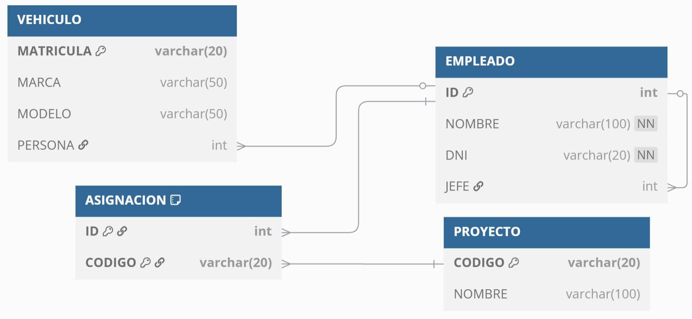
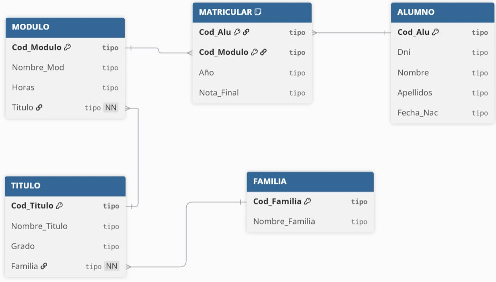

Modelo Físico RA2 RA4 SQL SQL - DDL SQL - DML
Modelo Físico: SQL - Instrucciones DDL y DML
Propuesta didáctica
Una vez conocido el modelo relacional, en esta unidad vamos a comenzar a trabajar el RA2 "Crea bases de datos definiendo su estructura y las características de sus elementos según el modelo relacional", además de iniciar el RA4 "Modifica la información almacenada en la base de datos utilizando asistentes, herramientas gráficas y el lenguaje de manipulación de datos".
Criterios de evaluación
Respecto al RA2:
- CE2a: Se ha analizado el formato de almacenamiento de la información.
- CE2b: Se han creado las tablas y las relaciones entre ellas.
- CE2c: Se han seleccionado los tipos de datos adecuados.
- CE2d: Se han definido los campos clave en las tablas.
- CE2e: Se han implantado las restricciones reflejadas en el diseño lógico.
- CE2h: Se han utilizado asistentes, herramientas gráficas y los lenguajes de definición y control de datos.
Respecto al RA4:
- CE4a: Se han identificado las herramientas y sentencias para modificar el contenido de la base de datos.
- CE4b: Se han insertado, borrado y actualizado datos en las tablas.
- CE4d: Se han diseñado guiones de sentencias para llevar a cabo tareas complejas.
Contenidos
Bases de datos relacionales:
- Lenguaje de descripción de datos (DDL).
Tratamiento de datos:
- Inserción, borrado y modificación de registros.
- Integridad referencial.
Cuestionario inicial
- ¿Cuál es el propósito de las sentencias DDL?
- ¿Y DML?
- ¿Cómo averiguamos tanto las tablas de una base de datos como su estructura?
- ¿Para qué sirve el comando
CREATE TABLE? - ¿Qué diferencia
CREATE TYPEdeCREATE DOMAIN? - A la hora de crear una tabla, ¿Dónde definiremos la clave primaria? ¿Y las restricciones de valor no nulo?
- ¿Qué restricciones SQL podemos aplicar sobre las columnas?
- ¿Por qué es mejor definir las restricciones al final de cada tabla mediante la keyword
CONSTRAINT? - ¿Cómo puedo ejecutar un script SQL, que tengo almacenado en un archivo, de una sola vez?
- ¿Puedo eliminar las tablas en cualquier orden mediante
DROP TABLE? - ¿Es obligatorio que una clave ajena siempre referencie a una clave primaria?
- ¿Para qué sirve el comando
INSERT INTO? - ¿Qué sucede si omitimos el
WHEREen unDELETE FROM?
Programación de Aula (13h)
Esta unidad es la quinta, con lo que se imparte en la primera evaluación, a finales del mes de noviembre, con una duración estimada de 11 sesiones lectivas:
| Sesión | Contenidos | Actividades | Criterios trabajados |
|---|---|---|---|
| 1 | Modelo físico. Puesta en marcha | AC501 | CE2a |
| 2 | DDL Gestión de Bases de Datos y tipos de datos | ||
| 3 | DDL Tablas | AC503 | CE2b, CE2c, CE2d |
| 4 | Restricciones | AC504 | CE2e |
| 5 | Supuesto DDL | AC507 | CE2b, CE2c, CE2d, CE2e |
| 6 | Cargando y exportando datos | ||
| 7 | DML. Inserciones | AC511 | CE4a, CE4b |
| 8 | DML. Actualizaciones y Borrados | AC512 | CE4b, CE4d |
| 9 | Supuesto DDL-DML I | AC515 | CE2b, CE2c, CE2d, CE2e, CE4d |
| 10 | Supuesto DDL-DML II | AC516 | CE4b, CE4d |
| 11 | Prueba objetiva | PO517 | RA2, RA4 |
| 12 | Reto - Diseño físico | PY518 | RA2, RA4 |
| 13 | Reto - Exposiciones |
Al finalizar esta unidad, comenzaremos un nuevo reto, centrado en el modelo físico, creando y cargando datos.
Modelo físico
El modelo físico es la traducción del modelo lógico a un modelo interno, dando lugar a un esquema físico interpretable por un SGBD concreto, paso final del diseño de las bases de datos.

Del diseño a los modelos
Para ello, transformaremos el modelo relacional al modelo físico utilizando un lenguaje específico de cada SGBD que nos permite definir los elementos, el cual se conoce como DDL (Data Definition Language).
SQL
SQL (sequel en inglés) es la lingua franca para interactuar con las bases de datos relacionales. Es un lenguaje declarativo, donde lo importante es definir qué se quiere hacer, en lugar de cómo se va a hacer.
Su origen se remonta a 1970 cuando Edgar Frank Codd publica el documento “Un modelo relacional de datos para grandes bancos de datos compartidos”, donde se definieron las bases del modelo relacional.
Versiones
El lenguaje SQL ha ido evolucionando conforme lo han hecho los diferentes SGBD y tecnologías, desde el primer estándar en el año 1986 hasta la última versión de 2023:
- SQL-86: funcionalidad mínima para que un lenguaje se considere SQL, introduciendo las sentencia
SELECT,CREATE TABLE,INSERT, ... yJOIN. - SQL-89: añade instrucciones para gestionar las claves ajenas (reglas de integridad referencial).
- SQL-92: standard base. Introduce los tipos de datos para trabajar con fechas, como
DATE,TIMEyTIMESTAMP, la agregación de consultas conGROUP BYy sus operadoresCOUNTySUM, así como la validación de los campos conCHECK. - SQL:1999 (SQL3): se añaden soporte para la programación orientada objetos y el uso de triggers y procedimientos almacenados mediante PL/SQL.
- SQL:2003: añade características de XML y las funciones ventana, así como el uso de
SEQUENCEpara generar valores únicos. - SQL:2008: introduce soporte para datos temporales, la instrucción
MERGEpara combinar datos y mejoras en las expresiones de tabla comunes (conWITH). - SQL:2016: introduce soporte nativo para JSON y funciones para manejar datos geoespaciales.
SQL se divide a su vez en cuatro "sublenguajes" de datos respecto a la funcionalidad que ofrecen:
- DDL (Data Definition Language): permite crear y manipular la estructura de una base de datos.
- DML (Data Manipulation Language): permite recuperar, almacenar, modificar, y eliminar datos de una BD. Dentro de DML, algunos autores definen DQL (Data Query Language) como el sublenguaje para realizar las consultas sobre las tablas para recuperar los datos.
- DCL (Data Control Language): permite crear roles, permisos y usuarios, controlando el acceso a los elementos de nuestras bases de datos.
- TCL (Transaction Control Language): administra las modificaciones creadas con el DML.
En esta sesión nos vamos a centrar en los lenguajes DDL y DML, definiendo la estructura de una base de datos y rellenándola con datos. En las tres unidades siguientes aprenderemos la parte de DQL para realizar consultas. Y para terminar el bloque, en la unidad 9 estudiaremos en profundidad tanto el lenguaje DCL como el TCL.
Sintaxis
La sintaxis de SQL se define mediante instrucciones que tiene diferentes parámetros, unos opcionales, otros con diferentes valores, etc.. La nomenclatura que vamos a emplear al explicar la sintaxis de cada instrucción será la siguiente:
| Símbolo | Descripción |
|---|---|
| MAYÚSCULAS | Palabras reservadas (keywords) de SQL |
| minúsculas | variable que hay que sustituir por un elemento concreto |
[] |
opcional |
| |
separa opciones alternativas |
[ | ] |
se elige uno de los valores |
{} |
obliga a elegir uno de los valores |
... |
número variable de datos |
Así pues, si por ejemplo, la sintaxis de una instrucción es la siguiente:
SELECT [ALL | DISTINCT] columna1 [,columna2, columna3,.......] | *
FROM tabla1 [tabla2, tabla3, ….]
[WHERE condición ]
[ORDER BY expr1 [DESC | ASC] [, expr2 [DESC | ASC] ....]
Destacar que las instrucciones finalizan con el signo de punto y coma (;) y que se emplea el doble guion (--) para introducir comentarios. Además, cualquier instrucción SQL puede ser partida por espacios o saltos de línea antes de finalizar la instrucción, facilitando su lectura. Así pues, posibles sentencias que cumplen la sintaxis son:
-- Ejemplos de instrucciones SQL
SELECT nombre, dni FROM cliente WHERE salario > 100;
SELECT * FROM cliente WHERE salario > 100 ORDER BY salario;
SELECT DISTINCT nombre
FROM cliente
ORDER BY salario DESC;
Case sensitive
En entornos Windows, a la hora de citar a las tablas o sus campos, no se distingue entre mayúsculas y minúsculas, pero en entornos Linux sí. Así pues, es recomendable respetar el uso de mayúsculas y minúsculas. Respecto a las keywords, son case insensitive, pero al menos es recomendable hacer un uso homogéneo a lo largo de nuestras aplicaciones.
Dicho esto, las siguientes sentencias son semejantes:
SELECT nombre FROM cliente;
select nombre from cliente;
Select nombre From cliente;
SelecT nombre FroM cliente;
DDL
Al empezar esta unidad habíamos comentado que DDL es el lenguaje encargado de definir las estructuras de las bases de datos, esto es, permite la creación, modificación y eliminación de los objetos de la base de datos (metadatos), como, por ejemplo, las bases de datos, tablas, índices o vistas.
TRUNCATE
Mientras que con DROP podemos borrar una tabla, con TRUNCATE vaciaremos las tablas de su contenido. Es por ello, que no se considera una operación DDL, sino más bien DML.
Para ello, utilizaremos principalmente tres tipos de sentencias:
CREATE: permite crear nuevas tablas, vistas e índices.ALTER: permite modificar la estructura de un elemento, como por ejemplo en las tablas agregando o eliminando campos, cambiando la definición de tipos, etc...DROP: empleado para eliminar las tablas y los índices.
Puesta en marcha
Para trabajar con un SGBD tenemos varias posibilidades. Una de ellas es mediante una solución ya desplegada en la nube, como veremos en la siguiente unidad. La segunda sería que lo instalásemos en nuestro sistema operativo mediante las instrucciones que ofrecen en sus páginas web, o bien utilizar uno de los paquetes "todo incluido" que ofrecen plataformas como Bitnami (ya sea XAMPP u otro paquete). Nosotros nos hemos decantado por la tercera posibilidad, el uso de contenedores Docker para aislar los servicios que utilicemos con lo que tengamos instalado en nuestros ordenadores. Por ello, en Entornos tiene toda la información necesaria tanto para poner en marcha MariaDB como PostgreSQL.
Una vez instalados los SGBD y conectados a los mismos, ya sean mediante la consola o la interfaz gráfica, debemos saber que aunque el 90% de la sintaxis de SQL es común, cada SGBD tiene sus particularidades. Es por ello que en este curso vamos a trabajar con MariaDB y PostgreSQL de manera indistinta.
Recuerda que todas las instrucciones terminan en ; y que vamos a dejar en MAYÚSCULAS las keywords para facilitar la lectura, aunque no es obligatorio escribirlas así.
Autoevaluación
En este momento deberías tener tanto MariaDB como PostgreSQL instalado en local y ser capaz de conectarte desde la línea de comandos.
Una vez dentro, ejecuta los siguientes comandos y comprueba si entiendes qué realiza cada una de las siguientes sentencias:
MariaDBPostgreSQL
SHOW DATABASES;
USE mibd;
SHOW TABLES;
DESCRIBE mitabla;
select version();
SELECT datname FROM pg_database;
\l
\dt
Comencemos con un caso muy sencillo, donde vamos a crear una tabla con un campo, insertar un registro y finalmente consultar la información recién almacenada:
CREATE TABLE ejemplo8a (
id INT PRIMARY KEY,
nombre VARCHAR(64) NOT NULL);
INSERT INTO ejemplo8a VALUES (1, "Nacho Mateos");
SELECT * FROM ejemplo8a;
Una vez conectados a nuestros SGBD y comprobado que podemos crear estructuras, insertar datos y consultarlos, vamos a profundizar en la definición de los esquemas relacionales.
Gestión de Bases de Datos
El principal elemento en un SGBD es la base de datos.
Cuando nos conectamos, indicaremos siempre a qué base de datos lo hacemos. De todos modos, siempre podemos consultar las bases de datos existentes:
MariaDBPostgreSQL
En el caso de MariaDB usaremos el comando SHOW DATABASES:
MariaDB [pruebas]> show databases;
+--------------------+
| Database |
+--------------------+
| information_schema |
| pruebas |
+--------------------+
2 rows in set (0.001 sec)
Si solo queremos el nombre de las bases de datos, podemos hacer una consulta a la tabla pg_database (que cumple la función de diccionario de datos):
pruebas=# SELECT datname FROM pg_database;
datname
-----------
postgres
pruebas
template1
template0
(4 rows)
Si queremos toda la información, podemos hacer uso del metacomando \l:
pruebas=# \l
List of databases
Name | Owner | Encoding | Locale Provider | Collate | Ctype | ICU Locale | ICU Rules | Access privileges
-----------+-------+----------+-----------------+------------+------------+------------+-----------+-------------------
postgres | s8a | UTF8 | libc | en_US.utf8 | en_US.utf8 | | |
pruebas | s8a | UTF8 | libc | en_US.utf8 | en_US.utf8 | | |
template0 | s8a | UTF8 | libc | en_US.utf8 | en_US.utf8 | | | =c/s8a +
| | | | | | | | s8a=CTc/s8a
template1 | s8a | UTF8 | libc | en_US.utf8 | en_US.utf8 | | | =c/s8a +
| | | | | | | | s8a=CTc/s8a
(4 rows)
Para crear una base de datos, usaremos la sentencia CREATE DATABASE:
MariaDBPostgreSQL
CREATE [OR REPLACE] DATABASE [IF NOT EXISTS] nombreBD;
Por ejemplo:
CREATE DATABASE midb;
CREATE DATABASE IF NOT EXISTS severo;
Más información en la documentación oficial
CREATE DATABASE nombreBD;
Por ejemplo:
CREATE DATABASE severo;
Más información en la documentación oficial
Una vez creada, nos hemos de conectar a la base de datos para gestionar sus elementos.
MariaDBPostgreSQL
En MariaDB usaremos el comando USE
USE nombreBD;
Por ejemplo:
USE severo;
En PostgreSQL usaremos el metacomando \c
\c nombreBD;
Por ejemplo:
\c severo;
Si necesitamos borrarla, porque ya no la necesitamos, usaremos la sentencia DROP DATABASE, tanto en MariaDB como en PostgreSQL:
DROP DATABASE [IF EXISTS] nombreBD;
Por ejemplo:
DROP DATABASE prueba;
DROP DATABASE IF EXISTS severo;
Almacenamiento
A la hora de almacenar la información de una base de datos, tanto a nivel lógico como físico, necesitamos de diferentes elementos que conviene conocer.
Jerarquía lógica de una BD

Jerarquía lógica
A nivel lógico, los elementos que organizan la información de una base de datos, y dependiendo del soporte de cada sistema gestor de base de datos, se definen mediante la siguiente jerarquía:
- Tablespace o espacio de tablas: estructura física (normalmente una carpeta/directorio) para agrupar varias bases de datos o esquemas (en MySQL/MariaDB no está soportado).
- Base de datos: elemento lógico de nivel superior.
- Esquema: agrupación lógica de una o más tablas (en MySQL/MariaDB un esquema es una base de datos, es decir, son conceptos sinónimos).
- Tabla: representación de una tabla relacional, que contiene datos organizados en filas y columnas. Cada tabla pertenece a un esquema o base de datos específico, y sus datos se almacenan en el tablespace asociado (normalmente no lo indicamos, ya que se almacena en el espacio por defecto).
Esquema vs Tablespace
Ambas estructuras permiten organizar los recursos de una base de datos, pero en el mundo del desarrollo de software actual, los schemas se usan frecuentemente. En cambio, los tablespaces se reservan para casos especiales de administración del almacenamiento físico, más propios de administradores de sistemas de bases de datos.
Un esquema es una forma de organizar objetos (tablas, vistas, funciones, etc.) dentro de una base de datos. Un schema es como un namespace o espacio de nombres. En el caso de PostgreSQL, todas las bases de datos tienen el esquema public. Se utilizan para:
- Separar lógicamente distintos módulos o partes de una aplicación dentro de la misma base de datos. Por ejemplo, ventas, contabilidad, almacén, etc...
- Gestionar permisos más fácilmente.
- Evitar conflictos de nombres entre tablas o funciones.
Por otro lado, un tablespace es una ubicación física en el sistema de archivos donde el SGBD almacena datos. Se utilizan para:
- Separar datos físicamente (por rendimiento, disponibilidad de espacio, etc.), por ejemplo, en bases de datos muy grandes que necesitan distribuirse en varios discos.
- Colocar tablas/indexes grandes en discos específicos de alto rendimiento.
En conclusión, el uso de tablespace y schema es independiente: uno organiza el almacenamiento físico (tablespace) y el otro el lógico (schema).
MariaDB es un sistema más sencillo que se basa únicamente en bases de datos y tablas. En cambio, PostgreSQL sí que permite definir la jerarquía completa, desde el espacio de tablas, la base de datos, el esquema y las tablas.
Así pues, si nos centramos en PostgreSQL, para crear un schema, utilizaremos la sentencia CREATE SCHEMA, mientras que para crear un espacio de tabla usaremos la instrucción CREATE TABLESPACE. Una vez creados, podemos relacionarlos, por ejemplo, asociando una tabla a un tablespace o creando una tabla dentro de un determinado esquema.
Respecto al uso de esquemas, destacar para indicar el esquema activo, hemos de cambiar la configuración de la variable search_path mediante el comando SET search_path TO nombreEsquema. Además, si queremos saber cuál es el esquema activo, recuperaremos el valor de search_path mediante el comando SHOW search_path.
Veamos un ejemplo sencillo donde creamos y utilizamos estas estructuras lógicas. Primero vamos a crear una carpeta con los permisos adecuados y, seguidamente, nos conectamos con el cliente psql:
mkdir /data/dbs
chown postgres:postgres /data/dbs
psql -U s8a pruebas
A continuación, creamos los diferentes recursos:
create-postgre.sql
CREATE TABLESPACE mi_tablespace LOCATION '/data/dbs';
CREATE DATABASE mi_db TABLESPACE mi_tablespace;
-- Nos conectamos a la base de datos creada
\c mi_db
--You are now connected to database "mi_db" as user "s8a".
CREATE SCHEMA mi_esquema;
-- Mostramos los esquemas
\dn
-- List of schemas
-- Name | Owner
-- ------------+-------------------
-- mi_esquema | s8a
-- public | pg_database_owner
-- (2 rows)
CREATE TABLE mi_esquema.mi_tabla (
id SERIAL PRIMARY KEY,
nombre VARCHAR(100)
) TABLESPACE mi_tablespace;
-- Usamos el esquema recién creado
SET search_path TO mi_esquema;
-- Mostramos las relaciones
\d
-- List of relations
-- Schema | Name | Type | Owner
-- ------------+-----------------+----------+-------
-- mi_esquema | mi_tabla | table | s8a
-- mi_esquema | mi_tabla_id_seq | sequence | s8a
-- (2 rows)
Destacar como mediante SET search_path TO <nombreEsquema> cambiamos el esquema por defecto.
Motores de almacenamiento
En los SGBD, y en concreto en MariaDB y PostgreSQL, los motores de almacenamiento (storage engines) son fundamentales para definir el formato de almacenamiento, es decir, cómo se almacenan y gestionan los datos en las bases de datos. Tanto MariaDB como PostgreSQL ofrecen diferentes motores de almacenamiento que proporcionan distintas capacidades, que influyen en cómo se gestionan y organizan los datos en disco, afectando el rendimiento, la concurrencia y la eficiencia del espacio.
- MariaDB
Los motores más conocidos son:
- InnoDB: motor de almacenamiento predeterminado en MariaDB, desde la versión 10.2. Proporciona soporte completo para transacciones ACID. Maneja bloqueo a nivel de fila y cuenta con soporte para claves ajenas. Finalmente, es adecuado para aplicaciones donde la integridad y las transacciones sean críticas.
- MyISAM: Históricamente, fue el motor de almacenamiento por defecto en MySQL antes de InnoDB. Su uso ha caído al no ser transaccional y no soportar claves ajenas. Se utiliza principalmente en aplicaciones que priorizan el rendimiento de las lecturas sobre la integridad de los datos.
Existen otros motores más específicos como TokuDB (para grandes volúmenes de datos con alta concurrencia y compresión), Aria (utilizado para recuperación rápida y consultas de solo lectura), ColumnStore (en aplicaciones de análisis de datos) o Memory (para tablas temporales y cachés rápidas). - PostgreSQL
En cambio, PostgreSQL no utiliza el concepto de múltiples motores de almacenamiento como MariaDB, sino que emplea un único motor nativo altamente configurable que ofrece muchas características avanzadas:
- Proporciona soporte completo para transacciones ACID, integridad referencial (claves foráneas) y MVCC para la gestión de concurrencia.
- Bloqueo a nivel de fila.
- Muy eficiente para grandes volúmenes de datos y con soporte completo para tipos de datos avanzados como JSON, XML, y más.
Además, es posible ajustar su comportamiento, por ejemplo, permitiendo acceder a datos externos a través de FDW (Foreign Data Wrappers), y optimizaciones internas mediante tablas particionadas y configuraciones adicionales.
Bloqueo a nivel de fila (row-level locking)
Técnica de control de concurrencia que permite a las bases de datos bloquear únicamente las filas que están siendo accedidas o modificadas por una transacción, en lugar de bloquear toda la tabla o bloques más grandes de datos.
Permite que múltiples transacciones trabajen en diferentes partes de una tabla sin interferir entre sí.
MVCC - Multiversion Concurrency Control
Cuando hay una modificación de datos, en lugar de sobrescribir una fila en actualizaciones, se almacena una nueva versión de la fila mientras se mantiene la versión anterior hasta que ya no sea necesaria (las transacciones que la usan han finalizado).
Las versiones anteriores de una fila se almacenan en el espacio de "deshacer" (undo space) para permitir transacciones y lecturas consistentes.
A nivel físico, el formato de almacenamiento depende principalmente del motor de almacenamiento que se esté utilizando, ya que cada motor tiene su propia manera de organizar y almacenar los datos.
-
MariaDB - InnoDB
-
Un bloque almacena los datos de tablas e índices mediante páginas, normalmente de 16 KB.
- Los bloques se almacenan en un archivo de tablespace (generalmente
ibdata1para bases de datos que comparten un tablespace, o en un archivo por tabla). - Respecto a las filas, se almacenan utilizando un formato compacto o redondeado, dependiendo de la configuración. Cada fila contiene una clave primaria (o un índice que actúa como clave primaria) y los datos correspondientes.
-
PostgreSQL
-
De manera predeterminada, todas las bases de datos utilizan el tablespace
pg_default, pero se pueden crear otros tablespaces personalizados. - Cada base de datos se representa por un directorio con un nombre numérico (OID) dentro del tablespace. Dentro de esta carpeta se encuentran archivos que representan tablas, índices, secuencias y otros objetos de la base de datos.
- Cada tabla se almacena en un archivo separado, y estos archivos están divididos en páginas de 8 KB. Si una tabla crece más allá de un tamaño específico (1 GB), se fragmenta en varios archivos con un sufijo numérico.
- Las filas se organizan dentro de páginas de 8 KB, donde cada página contiene múltiples tuplas (filas). Cada fila o tupla en una tabla tiene un ctid (tuple identifier) que identifica su ubicación física en el archivo de datos.
Juegos de caracteres
Entendemos como juego de caracteres (character sets) a la codificación que utiliza el SGBD para representar los datos, definiendo qué caracteres pueden almacenarse en la base de datos y cómo esos caracteres son codificados internamente.
Tal como ya habéis estudiado en el módulo profesional de Sistemas Informáticos, los juegos de caracteres más conocidos son ASCII (caracteres básicos en inglés), iso-8859-1 latin (expande ASCII para incluir los caracteres acentuados y símbolos de los lenguajes occidentales) y utf-8, el cual parte de la familia de estándares Unicode, que puede representar caracteres de casi todos los lenguajes del mundo, incluidos caracteres multibyte.
Además, podemos configurar la colación (collation), la cual define cómo se comparan y ordenan las cadenas de texto para un juego de caracteres específico (por ejemplo, la ñ después de la n y no conforme a la tabla de códigos ASCII), teniendo en cuenta cosas como el uso de mayúsculas y minúsculas o el tratamiento de acentos (por ejemplo, si Á es igual que á).
En MariaDB y PostgreSQL, los juegos de caracteres y las colaciones juegan un papel importante en cómo se almacenan y comparan las cadenas de texto. Cada sistema maneja los juegos de caracteres de manera diferente, y a continuación vamos a estudiar cómo funciona en cada uno:
- MariaDB
Admite múltiples juegos de caracteres y colaciones, que pueden establecerse a nivel de base de datos, tabla, columna o incluso a nivel de sesión.
Así pues, ofrece una gran flexibilidad con varios juegos de caracteres (como utf8, utf8mb4, latin1, etc.) y permite especificar colaciones para determinar cómo se comparan y ordenan los textos.
- PostgreSQL
Está optimizado principalmente para el uso de utf8, con menos enfoque en otros juegos de caracteres.
Las colaciones son más dependientes de las configuraciones del sistema operativo y se aplican al nivel de la base de datos o columna, pero la mayoría de los sistemas de producción usan utf8 por su versatilidad.
Del mismo modo, la configuración del juego de caracteres y la colación dependen del SGBD empleado, y se indican a la hora de crear la base de datos:
MariaDBPostgreSQL
La codificación y la colación se especifican al crear una base de datos mediante CREATE DATABASE con las opciones CHARACTER SET y COLLATE.
Además de utf8, latin1y ascii ya comentados previamente, una codificación muy empleado es utf8mb4, la cual es una extensión de utf8 que permite almacenar todos los caracteres de Unicode, incluidos emojis y otros símbolos que no se pueden representar en utf8.
Además, luego para cada juego de caracteres, tenemos sus colaciones. Por ejemplo, el juego de caracteres utf8 tiene varias colaciones como:
utf8_general_ci: Colación insensible a mayúsculas/minúsculas (case-insensitive).utf8_bin: Colación binaria, sensible a mayúsculas/minúsculas y que compara los caracteres basándose en sus valores binarios.
CREATE DATABASE mi_base_de_datos
CHARACTER SET utf8mb4
COLLATE utf8mb4_unicode_ci;
La codificación y la colación se especifican al crear una base de datos mediante CREATE DATABASE con las opciones ENCODING y LC_COLLATE.
Las colaciones más comunes son:
en_US.UTF-8: Colación en inglés, sensible a mayúsculas/minúsculas.es_ES.UTF-8: Colación en español.
CREATE DATABASE mi_base_de_datos
WITH ENCODING 'UTF8'
LC_COLLATE 'es_ES.UTF-8'
LC_CTYPE 'es_ES.UTF-8';
Tipos de datos
Antes de entrar a ver cómo podemos crear las tablas, necesitamos conocer los tipos de datos que van a poder tener las columnas que definamos. De forma general, los tipos de datos se agrupan en las siguientes categorías:
- Numéricos, como
INToDOUBLE - Cadena, como
CHAR,VARCHARoTEXT - Fecha/Hora, como
DATEoTIMESTAMP - Binarios, como
BINARY - Otros, como
XML
Dicho esto, los tipos más empleados en MariaDB y PostgreSQL son:
| Tipo de dato | MariaDB | PostgreSQL | Descripción |
|---|---|---|---|
| Numéricos | |||
TINYINT |
Sí | No | Entero pequeño, de 1 byte (MariaDB) |
SMALLINT |
Sí | Sí, alias int2 |
Entero pequeño, de 2 bytes |
MEDIUMINT |
Sí | No | Entero de 3 bytes (MariaDB) |
INT, INTEGER |
Sí | Sí, alias int4 |
Entero estándar de 4 bytes |
BIGINT |
Sí | Sí, alias int8 |
Entero grande de 8 bytes |
DECIMAL, NUMERIC |
Sí | Sí | Número con precisión fija (exacta) |
FLOAT |
Sí | Sí | Número de coma flotante de precisión simple |
DOUBLE |
Sí | Sí, alias float8 |
Número de coma flotante de precisión doble |
SERIAL |
No | Sí, alias serial4 |
Entero autoincremental (PostgreSQL) 1 |
| Cadenas | |||
CHAR(n) |
Sí | Sí | Cadena de longitud fija |
VARCHAR(n) |
Sí | Sí | Cadena de longitud variable |
TEXT |
Sí | Sí | Cadena de longitud ilimitada |
| Fechas y horas | |||
DATE |
Sí | Sí | Fecha (año, mes, día) |
TIME |
Sí | Sí | Hora (sin zona horaria) |
DATETIME |
Sí | No | Fecha y hora (MariaDB) |
TIMESTAMP |
Sí | Sí | Marca de tiempo (con o sin zona horaria) |
| Booleanos | |||
BOOLEAN |
Sí (alias de TINYINT) |
Sí, alias bool |
Tipo booleano (en MariaDB es alias de TINYINT) |
Algunos ejemplos de tipos serían:
BIGINT
CHAR(8)
VARCHAR(255)
DECIMAL(5,2) -- 5 dígitos en total, con 2 decimales, por ejemplo 123,45
¿El tamaño importa?
Si el almacenamiento y la memoria son cada vez más baratos, ¿Por qué hemos de preocuparnos que un campo ocupe 2 o 4 bytes? Cuando la base de datos es pequeña, el resultado es despreciable. Pero conforme crece, los costes computacionales y los requisitos de memoria también lo hacen.
Por ello, cuanto menos ocupen los datos, menor será el tiempo necesario para realizar las consultas (ya que los datos se cargan antes en memoria), la transmisión de datos será más eficiente, así como su almacenamiento.
Cadenas
Para almacenar cadenas, hemos visto que podemos emplear, principalmente, CHAR, VARCHAR o TEXT.
Algunas recomendaciones para elegir uno u otro tipo son:
- Cuando un campo tenga una longitud uniforme, utiliza
CHAR. Por ejemplo, para un código postal emplearemosCHAR(5)mientras que para una matrículaCHAR(7)(cuatro dígitos más tres letras). - Cuando un campo tenga una longitud variable pero relativamente corta, utiliza
VARCHAR. Por ejemplo, para almacenar el nombre de un cliente, podemos emplearVARCHAR(32)o para el nombre de una asignaturaVARCHAR(64). ¿En qué punto dejamos de considerar que una cadena es relativamente corta? Cuando no puedas estimar su tamaño, quizás a partir de 500 caracteres, o como mucho 2KB. - Cuando el campo contenga una gran cantidad de datos textuales, que normalmente exceden el millar de caracteres, debes decantarte por
TEXT. Por ejemplo, el manual de un producto o el texto de un libro.
Hay casos en los que la línea que separa un VARCHAR de un TEXT no está clara. Aunque los estudiaremos más adelante, debes saber que si, necesitas comparar, ordenar o agrupar por ese campo en una consulta, es preferible usar VARCHAR.
En MariaDB, además de los tipos, tenemos modificadores sobre ellos que fijan lo longitud máxima de cada tipo de dato. Así pues, un CHAR puede llegar hasta los 255 caracteres, mientras que tanto un VARCHAR como TEXT pueden alcanzar hasta 65.532 caracteres; MEDIUMTEXT hasta 16.777.215 y finalmente LONGTEXT a 4.294.967.295 caracteres (4GB).
Numéricos
Para almacenar valores numéricos, hemos visto que podemos emplear TINYINT, SMALLINT, INT y BIGINT para números enteros y FLOAT, DOUBLE y DECIMAL cuando tenemos decimales.
Respecto a los números enteros, cada tipo tiene su propio rango y, por tanto, puede almacenar números más grandes (a costa de ocupar más memoria). Estos tipos tienen valores mínimos y máximos, dependiendo de si se configuran con o sin signo (SIGNED o UNSIGNED). Los números sin signo, en la gran mayoría de SGBD, no pueden ser negativos.
| Tipo | Tamaño (bytes) | Rango SIGNED |
Rango UNSIGNED |
|---|---|---|---|
TINYINT |
1 | de -128 a 127 | de 0 a 255 |
SMALLINT |
2 | de -32,768 a 32,767 | de 0 a 65,535 |
INT |
4 | de -2,147,483,648 a 2,147,483,647 (algo más de 2 billones) | de 0 a 4,294,967,295 (4 billones) |
BIGINT |
8 | de -9,223,372,036,854,775,808 a 9,223,372,036,854,775,807 (más de 9 quintillones) | de 0 a 18,446,744,073,709,551,615 (18 quintillones) |
Respecto a los números con decimales, hemos de diferenciar entre los de coma flotante y los de coma fija. Los ejemplos típicos de coma flotante son FLOAT con 32 bits y DOUBLE con una precisión de 64 bits, los cuales no tienen una precisión uniforme y puede producir errores de redondeo. Estos tipos se utilizan cuando la precisión no es estrictamente necesaria, como en la lectura de sensores, el análisis estadístico y la simulación física.
Cuando se requiere precisión, hasta el punto de tener que preocuparse por cada valor decimal, debemos evitar los tipos de coma flotante y utilizar números de coma fija, donde el punto decimal está en una posición predeterminada y fija, ocupando siempre el mismo espacio y teniendo siempre la misma precisión. Para ello, utilizaremos el tipo DECIMAL(p,s) (o su sinónimo NUMERIC). donde p indica la precisión, esto es, el número total de dígitos y s la escala, es decir, la cantidad de decimales. Así pues, DECIMAL(5,2) tendrá un máximo de 3 dígitos en su parte entera y tendrá dos en la decimal, permitiendo valores desde -999.99 hasta 999.99.
¿Pero realmente cambia el comportamiento entre un tipo y otro? Por ejemplo, si multiplicamos 0.1 por 0.3 y luego le restamos 0.3, deberíamos obtener 0.0, ¿verdad?
Vamos a comprobarlo directamente sobre MariaDB:
CREATE TABLE precision_test (
valor_float FLOAT,
valor_decimal DECIMAL(2,1)
);
INSERT INTO precision_test (valor_float, valor_decimal) VALUES (0.1, 0.1);
SELECT
(valor_float * 3) - 0.3 AS error_float,
(valor_decimal * 3) - 0.3 AS error_decimal
FROM precision_test;
-- +----------------------------+---------------+
-- | error_float | error_decimal |
-- +----------------------------+---------------+
-- | 0.000000004470348369256527 | 0.0 |
-- +----------------------------+---------------+
Si entrar en detalle en la sintaxis SQL para la creación de la tabla, la inserción de datos o la consulta, podemos observar como al utilizar un campo de tipo coma flotante el resultado no es el esperado.
En resumen, se recomienda utilizar:
FLOAToDOUBLEcuando la velocidad y el rango sean más importantes que la precisión (por ejemplo, en datos científicos).DECIMALoNUMERICcuando la precisión sea crítica, como en aplicaciones contables, financieras o bancarias.
Por ejemplo, para almacenar dinero, se suele emplearDECIMAL(10,2)
Temporales
Los tipos de datos temporales permiten almacenar fecha, horas o marcas temporales (timestamps), mediante los tipos DATE, TIME y TIMESTAMP respectivamente.
UTC
Tiempo Universal Coordinado (UTC) es como un gran reloj que todo el mundo está de acuerdo en seguir. Es la misma hora para todos, estén donde estén.
Si vives en España y tus amigos de Chile quieren informarte de su hora local sin darte explícitamente la hora exacta, pueden decirte "Nuestra hora local, en invierno, es UTC menos 4 horas". Sabiendo que en España en invierno estamos en UTC+1 (Canarias es UTC+0), sabemos que la diferencia es de 5 horas.
Cada SGBD tiene sus particularidades, pero a modo general, usaremos:
DATEcuando necesitamos una fecha concreta, como una fecha de nacimiento o la fecha de un contrato. Por ejemplo,2025-07-16representa el 16 de julio de 2025.TIMEpara almacenar eventos que ocurren durante un día, como la hora de entrada a la empresa. Por ejemplo,14:30:00representa las dos y media de la tarde.DATETIMEpara almacenar tanto la fecha como la hora, por ejemplo, un evento de una reunión la próxima semana podríamos expresarla mediante2025-07-22 12:15:00. No almacena la zona horaria ni convierte a UTC. Utiliza 8 bytes para su almacenamiento.TIMESTAMPpara registrar el momento exacto de un evento que debe ser coherente en todas las zonas horarias, como las marcas de tiempo de registro, la creación de registros y las horas de modificación. Normalmente, el SGBD gestiona automáticamente la conversión de zonas horarias en los datosTIMESTAMP. Cabe destacar que están limitadas al año 2038, ya que, en 4 bytes, calcula la cantidad de segundos transcurridos desde el 1 de enero de 1970 (época Unix).
Es importante tener en cuenta que, si está diseñando una base de datos para una aplicación cuyos usuarios son estrictamente locales, como un sistema de pedidos para un restaurante, no necesitaremos preocuparnos por los problemas de zona horaria. Pero si estamos creando una aplicación que podría utilizarse en todo el mundo, sí deberíamos almacenar los datos de la zona horaria como parte de los atributos de datos temporales. Independientemente de las especificaciones del SGBD empleado, es recomendable almacenar los valores de fecha y hora en UTC, porque garantiza la coherencia y evita problemas con los cambios de horario de verano, las diferentes zonas horarias y los usuarios que viajan.
Enumeraciones
Además de los tipos vistos, podemos crear enumeraciones como un conjunto de valores restringidos que puede tomar un determinado campo, definiendo una lista de valores posibles.
Para ello haremos uso de la keyword ENUM tanto en MariaDB como en PostgreSQL:
MariaDBPostgreSQL
curso ENUM ('0', '1', '2'),
horario ENUM ('mañana', 'tarde', 'noche')
estado ENUM('pendiente', 'en_proceso', 'finalizado')
Primero debemos definir un tipo y luego asociar ese tipo al campo:
CREATE TYPE animo AS ENUM ('feliz', 'triste', 'normal');
estado animo;
Internamente, el valor se almacena como un entero (1 byte si hay ≤255 valores, 2 bytes si hay más) y al definir los valores posibles, éstos están limitados y controlados.
Usaremos enumeraciones cuando el conjunto de valores sea fijo y pequeño, y no cambie con frecuencia. Además, obtendremos validación automática por parte del motor de la base de datos, mediante una almacenamiento eficiente sin perder legibilidad.
Por el contrario, cuando el conjunto de valores es inestable y puede cambiar con el tiempo, no se recomienda utilizar una enumeración. Tampoco es adecuada si necesitamos traducir los valores o asociarles información adicional (como colores, iconos, etc.), en cuyo caso es preferible emplear una tabla de referencia junto con una clave foránea.
Autoevaluación
Piensa en el tipo de dato que asignarías a cada uno de los siguientes campos:
- DNI de un usuario
- Nombre completo de un cliente
- Correo electrónico del cliente
- Hora de entrada del turno
- Precio de un producto
- Cantidad de empleados de una empresa
- ISBN de un libro
- Talla de una camiseta
- Prólogo de un libro
- Momento que entró por última vez a la aplicación
- Peso del producto (en kg)
- Fecha de nacimiento de un cliente
- Código de país (ES, FR, DE, etc.)
- Estado de un pedido
- Identificador de un cliente
- Número de la tarjeta de crédito
- Sexo de una persona
- ¿Está casado/a?
- Contraseña de un usuario
- Categoría de un producto
- Altura de una persona
- Color de una camiseta
- Número de teléfono de un cliente
- Instante de la compra de un producto
Creando tipos y dominios
Además de todos los tipos de datos vistos (y algunos más que se salen del alcance del curso), en algunos SGBD (por ejemplo, PostgreSQL sí que lo permite, pero MariaDB no), podemos crear nuestros propios tipos de datos o dominios.
Mediante CREATE TYPE podemos definir tipos de datos complejos, como tipos de registros, arrays o tipos compuestos de varios atributos. Por ejemplo, podemos crear un tipo de dato para almacenar coordenadas:
CREATE TYPE coordenada AS (
x FLOAT,
y FLOAT
);
Por otro lado, mediante CREATE DOMAIN podemos definir un tipo de dato basado en un tipo existente, pero con restricciones adicionales (como validaciones, reglas de longitud, formatos, etc.). Por ejemplo, podemos crear un dominio para almacenar números naturales (enteros positivos):
CREATE DOMAIN nnatural AS integer CHECK (VALUE > 0);
Tablas
Dentro de la definición de datos, la creación de tablas es la parte más importante ya que nos permite trasladar nuestro modelo relacional al modelo físico.
Para crear una tabla emplearemos la sentencia CREATE TABLE. La sintaxis básica compartida por todos los SGBD es la siguiente:
CREATE [OR REPLACE] TABLE [basededatos.]nombreDeTabla (
columna1 tipoDato1 [propiedadesColumna],
...
columnaN tipoDatoN [propiedadesColumna],
[restriccionesTabla]
);
Conviene revisar la sintaxis de MariaDB y PostgreSQL para comprobar los detalles de cada SGBD.
Por ejemplo, para crear una tabla con un único atributo podríamos hacer:
CREATE TABLE USUARIO (
nombre VARCHAR(25)
);
Algunas restricciones que hemos de tener en cuenta son:
- No puede haber nombres de tablas repetidas.
- El nombre de la tabla debe comenzar por un carácter alfabético y su longitud máxima es de 30 caracteres. Sólo se permiten letras del alfabeto inglés, dígitos o el signo de guión bajo.
- No podemos crear tablas cuyo nombre coincida con las palabras reservadas de SQL (por ejemplo, no podemos llamar a una tabla
WHERE). - Como convención, vamos a nombrar las TABLAS en MAYÚSCULAS y las columnas en minúsculas.
- En principio, respecto a los nombre de las tablas y las columnas, los SGBD no son case sensitive (no distinguen entre mayúsculas y minúsculas), aunque puede depender de la configuración del sistema operativo (sobre todo en sistemas Linux/Unix) o el uso de comillas dobles (no recomendado). En cambio, en los datos, depende de la configuración de la colación.
A continuación, tenemos algunos ejemplos de creaciones de tablas con diferentes tipos de datos:
CREATE TABLE PROVEEDOR(nombre VARCHAR(32));
CREATE TABLE CLIENTE (
nombre VARCHAR(32),
localidad VARCHAR(30) DEFAULT 'Badajoz');
CREATE TABLE PRESTAMO (
idPrestamo INT UNSIGNED,
fechaPrestamo DATE DEFAULT CURRENT_DATE,
instantePrestamo TIMESTAMP DEFAULT CURRENT_TIMESTAMP);
CREATE TABLE CIUDAD (
nombre VARCHAR(20) NOT NULL,
poblacion INT NULL,
codigoPostal CHAR(5) NOT NULL DEFAULT '03203');
CREATE TABLE PROVINCIA (
nombre VARCHAR(20) NOT NULL,
poblacion INT DEFAULT 5000);
Con estos ejemplos, hemos visto que algunas de las propiedades de columna que podemos indicar son los valores no nulos (mediante NOT NULL) o valores por defecto (mediante DEFAULT). En el apartado Restricciones las estudiaremos en profundidad.
En todo momento, podemos obtener la estructura de una tabla mediante el comando DESCRIBE nombreTabla en MariaDB como mediante \d nombreTabla en PostgreSQL:
MariaDBPostgreSQL
DESCRIBE CIUDAD
-- +--------------+--------------+------+-----+---------+-------+
-- | Field | Type | Null | Key | Default | Extra |
-- +--------------+--------------+------+-----+---------+-------+
-- | nombre | varchar(20) | NO | | NULL | |
-- | poblacion | int(11) | YES | | NULL | |
-- | codigoPostal | char(5) | NO | | 03203 | |
-- +--------------+--------------+------+-----+---------+-------+
-- 3 rows in set (0.000 sec)
\d CIUDAD
-- Table "mi_esquema.ciudad"
-- Column | Type | Collation | Nullable | Default
-- --------------+-----------------------+-----------+----------+-----------------
-- nombre | character varying(20) | | not null |
-- poblacion | integer | | |
-- codigopostal | character(5) | | not null | '03203'::bpchar
A partir de consultas
Un caso particular de la creación de tablas es hacerlo a partir del resultado de una consulta, de manera que contiene la estructura (tipos de datos) y los datos obtenidos del resultado obtenido. Para ello, en vez de indicar los campos y restricciones, realizamos la consulta mediante CREATE TABLE ... AS SELECT:
CREATE TABLE nombreTabla AS SELECT …
Por ejemplo, para crear una tabla GERENTE con los datos de empleados catalogados como Gerente, haríamos:
CREATE TABLE GERENTE AS
SELECT e.nombre, e.apellido1, e.apellido2, e.email
FROM EMPLEADO e
WHERE e.puesto LIKE "%Gerente%";
Volveremos a esta posibilidad cuando aprendamos a realizar consultas mediante SQL y DDL en la Unidad 8.
Clave primaria
Una vez visto cómo crear las tablas y sus atributos, nos centramos en la creación de la clave primaria. Toda tabla debe tener una clave primaria (ya sea simple o compuesta). Para ello, si tenemos un atributo simple, podemos añadir la propiedad PRIMARY KEY al atributo, aunque por convenciones de código, es mejor definir la clave primaria después de todos los atributos, a modo de restricción:
CREATE TABLE CIUDAD (
nombre VARCHAR(20) PRIMARY KEY, -- clave primaria como propiedad
poblacion INT DEFAULT 5000);
CREATE TABLE PROVINCIA (
nombre VARCHAR(20),
poblacion INT DEFAULT 5000,
PRIMARY KEY(nombre)); -- clave primaria como restricción
CREATE TABLE COMUNIDAD (
nombre VARCHAR(20),
poblacion INT DEFAULT 5000,
CONSTRAINT PK_COMUNIDAD PRIMARY KEY(nombre)); -- clave primaria como restricción con nombre
CREATE TABLE EMPLEADO (
codigo BIGINT UNSIGNED,
departamento VARCHAR(15),
nombre VARCHAR(40),
PRIMARY KEY(codigo, departamento)); -- clave primaria compuesta
Clave subrogada
También podemos añadir una clave subrogada a modo de código (o id) asociado a un número entero autoincrementable. Para ello, en MariaDB, tras la definición del atributo como entero (sin signo), añadiremos la propiedad AUTO_INCREMENT en la definición del atributo.
MariaDB
CREATE TABLE PERSONA_AI (
id INT UNSIGNED AUTO_INCREMENT PRIMARY KEY,
nombre VARCHAR(40),
fecha DATE);
En PostgreSQL existe el tipo SERIAL (o BIGSERIAL el cual utiliza 8 bytes, si necesitamos un número mayor) para crear un identificador único.
PostgreSQL
CREATE TABLE PERSONA_SERIAL (
id SERIAL PRIMARY KEY,
nombre VARCHAR(40),
fecha DATE);
Un caso menos conocido incluido en el standard SQL:2011 es la cláusula GENERATED { ALWAYS | BY DEFAULT } AS IDENTITY para definir columnas autoincrementales de manera portable. El problema es que ni MariaDB ni MySQL lo soportan, aunque sí PostgreSQL, Oracle o DB2, entre otros:
PostgreSQL
CREATE TABLE PERSONA_IDENTITY (
id BIGINT GENERATED ALWAYS AS IDENTITY,
nombre VARCHAR(40),
fecha DATE);
Finalmente, comentar la posibilidad de utilizar secuencias en vez de los tipos autoincrementables, tanto en PostgreSQL como en Oracle. Antes de crear una tabla, crearemos una secuencia mediante CREATE SEQUENCE. Además, previamente a cada inserción, hemos de recuperar el siguiente valor de la secuencia mediante la función nextval:
PostgreSQL
CREATE SEQUENCE pid_seq AS integer;
CREATE TABLE PERSONA_SEQ (
id INTEGER NOT NULL DEFAULT nextval('pid_seq'),
nombre VARCHAR(40),
fecha DATE
);
INSERT INTO PERSONA_SEQ VALUES (nextval('pid_seq'), 'Juani Moya');
UUID
El tipo de datos UUID está pensado para el almacenamiento de datos UUID (Universally Unique Identifier) de 128 bits, el cual es una alternativa común a las claves primarias numéricas respaldadas por secuencias o números auto-incrementables. Un ejemplo de dato sería 93aac041-1a14-11ec-ab4e-f859713e4be4.
Los sistemas más antiguos se diseñaron en una época donde las aplicaciones eran principalmente monolíticas y centralizadas. En ese contexto, usar claves primarias auto-incrementables era más eficiente y lógico.
Con el auge de los sistemas distribuidos, las aplicaciones web escalables y la necesidad de sincronizar datos entre múltiples sistemas, los UUID se volvieron cada vez más valiosos. Un UUID permite generar identificadores únicos en cualquier parte de un sistema distribuido sin temer colisiones, lo cual es imposible con claves auto-incrementales.
Tanto MariaDB como PostgreSQL soportan el tipo de dato UUID, pero cada SGBD utiliza diferentes funciones para su uso (en MariaDB disponemos de la función UUID() mientras que en PostgreSQL usaremos gen_random_uuid()).
Veamos un ejemplo sobre una tabla de usuarios:
MariaDBPostgreSQL
-- 1. Creamos la tabla y a la clave le ponemos el tipo UUID y su valor por defecto
CREATE TABLE USUARIO_UUID (
id UUID PRIMARY KEY DEFAULT UUID(),
nombre VARCHAR(100) NOT NULL,
email VARCHAR(255) UNIQUE NOT NULL,
fecha_creacion TIMESTAMP DEFAULT CURRENT_TIMESTAMP
);
-- 2. Insertar datos (UUID se genera automáticamente)
INSERT INTO USUARIO_UUID (nombre, email)
VALUES ('Ana Martínez', 'ana@ejemplo.com');
-- 3. Insertar con UUID específico usando el tipo nativo
INSERT INTO USUARIO_UUID (id, nombre, email)
VALUES ('550e8400-e29b-41d4-a716-446655440000', 'Luis Rodríguez', 'luis@ejemplo.com');
-- 4. Consultar datos
SELECT id, nombre, email FROM USUARIO_UUID;
-- 5. Generar UUID manualmente
SELECT UUID() as nuevo_uuid;
CREATE TABLE USUARIO_UUID (
id UUID PRIMARY KEY DEFAULT gen_random_uuid(),
nombre VARCHAR(100) NOT NULL,
email VARCHAR(255) UNIQUE NOT NULL,
fecha_creacion TIMESTAMP DEFAULT CURRENT_TIMESTAMP
);
INSERT INTO USUARIO_UUID (nombre, email)
VALUES ('Juan Pérez', 'juan@ejemplo.com');
-- 1. Insertar con UUID específico
INSERT INTO USUARIO_UUID (id, nombre, email)
VALUES ('550e8400-e29b-41d4-a716-446655440000', 'María García', 'maria@ejemplo.com');
-- 2. Consultar datos
SELECT id, nombre, email FROM USUARIO_UUID;
-- 3. Generar UUID manualmente
SELECT gen_random_uuid() as nuevo_uuid;
Modificando tablas
Una vez creada una tabla, podemos modificar su estructura mediante las sentencias ALTER TABLE, tanto en MariaDB como en PostgreSQL.
Para añadir columnas, usaremos la opción ADD:
ALTER TABLE nombreTabla ADD (
nombreColumna tipoDatos [propiedades] [FIRST | AFTER nombreColumna]
[,columnaSiguiente tipoDatos [propiedades] [FIRST | AFTER nombreColumna]…)
De este modo, si queremos añadir un campo para almacenar el teléfono de los empleados (sus campos estarán inicializados a NULL para cada registro de la tabla EMPLEADO), haríamos:
ALTER TABLE EMPLEADO ADD telefono CHAR(12);
Si la hubiéramos querido añadir como la primera columna de la tabla, necesitamos indicar el parámetro FIRST, o si queremos que vaya detrás de una determinada columna, usaremos AFTER nombreColumna:
ALTER TABLE EMPLEADO ADD id INT UNSIGNED FIRST;
ALTER TABLE EMPLEADO ADD apellidos VARCHAR(128) AFTER nombre;
Si comprobamos qué columnas tenemos veremos que se han añadido las nuevas en las posiciones indicadas:
describe EMPLEADO;
-- +--------------+------------------+------+-----+---------+-------+
-- | Field | Type | Null | Key | Default | Extra |
-- +--------------+------------------+------+-----+---------+-------+
-- | id | int(10) unsigned | YES | | NULL | |
-- | codigo | varchar(9) | NO | PRI | NULL | |
-- | departamento | varchar(15) | NO | PRI | NULL | |
-- | nombre | varchar(40) | YES | | NULL | |
-- | apellidos | varchar(128) | YES | | NULL | |
-- | telefono | char(12) | YES | | NULL | |
-- +--------------+------------------+------+-----+---------+-------+
-- 6 rows in set (0.002 sec)
En cambio, si queremos eliminar una columna, usaremos la opción DROP:
ALTER TABLE nombreTabla DROP (columna [,columnaSiguiente,...]);
Así pues, si queremos eliminar el teléfono recién creado, haremos:
ALTER TABLE EMPLEADO DROP (telefono);
Finalmente, si queremos modificar el tipo de una columna, usaremos la opción MODIFY:
ALTER TABLE nombreTabla MODIFY(
columna tipo [propiedades]
[,columnaSiguiente tipo [propiedades]]
Un caso particular de las operaciones de modificación es renombrar una tabla. Para ello, usaremos la opción RENAME TO:
ALTER TABLE nombreTablaViejo RENAME TO nombreNuevo;
También, podemos cambiar el juego de caracteres (y la colación) de una tabla concreta, mediante:
ALTER TABLE nombreTabla CONVERT TO CHARACTER SET nuevoJuego [COLLATE nuevaColacion];
Finalmente, conviene destacar cómo se gestiona la modificación de una clave primaria. Las claves primarias no se pueden modificar, por lo tanto, si queremos cambiar, necesitamos primero eliminarla mediante DROP PRIMARY KEY, y luego volverla a crear.
ALTER TABLE nombreTabla DROP PRIMARY KEY;
ALTER TABLE nombreTabla CONSTRAINT PK_nombreTabla PRIMARY KEY (campo1[,campo2]);
Si hacia la clave primaria, o desde la clave primaria, tenemos alguna clave ajena, al eliminar la clave primaria obtendremos un error, ya que considera que hay dependencias entre los campos. Para evitarlo, primero hemos de deshabilitar las claves, volver a eliminar la primaria y crearla de nueva, y finalmente habilitar de nuevos las claves ajenas:
ALTER TABLE tabla DISABLE KEYS;
ALTER TABLE nombreTabla DROP PRIMARY KEY;
ALTER TABLE nombreTabla CONSTRAINT PK_nombreTabla PRIMARY KEY (campo1[,campo2]);
ALTER TABLE tabla ENABLE KEYS;
Autoevaluación
Si tenemos las siguientes tablas:
CREATE TABLE CLIENTE (
dni VARCHAR(9) PRIMARY KEY,
nombre VARCHAR(50),
direccion VARCHAR(60));
CREATE TABLE MASCOTA (
codigo INTEGER PRIMARY KEY,
nombre VARCHAR(50),
raza VARCHAR(50));
¿Sabes qué realizan las siguientes operaciones?
ALTER TABLE MASCOTA ADD especie VARCHAR(10) AFTER raza;
ALTER TABLE MASCOTA ADD cliente VARCHAR(9) AFTER nombre;
ALTER TABLE MASCOTA ADD CONSTRAINT fk_duenyo FOREIGN KEY (cliente) REFERENCES CLIENTE(dni);
ALTER TABLE MASCOTA MODIFY codigo INT(3) AUTO_INCREMENT;
Las siguientes instrucciones realizan la misma operación pero en diferente SGBD. ¿Sabrías averiguar de quién es cada sentencia?
ALTER TABLE MASCOTA CHANGE nombre nomMascota VARCHAR(50);
ALTER TABLE MASCOTA RENAME nombre TO nomMascota VARCHAR(50);
Eliminando tablas
Para eliminar tablas se emplea la instrucción DROP TABLE nombreTabla, tanto en MariaDB como en PostgreSQL. Hemos de tener en cuenta que cuando tenemos un base de datos con tablas relacionadas mediante claves ajenas, la integridad referencial restringe el borrado de una clave primaria referenciada por una clave ajena. Es por ello que el orden importa, y tenemos que ir eliminando primero las tablas que contienen las claves ajenas y no son referenciadas por otras tablas.
DROP TABLE CLIENTE;
Si queremos borrar una tabla para volver a crearla, bien podemos hacerla mediante un DROP TABLE seguido de un CREATE TABLE, o directamente realiza un CREATE OR REPLACE TABLE:
CREATE OR REPLACE TABLE CLIENTE (
dni VARCHAR(9) PRIMARY KEY,
cnombre VARCHAR(50),
direccion VARCHAR(60));
Restricciones
Una vez hemos visto los casos más sencillos, hemos de saber que las tablas van a contener restricciones que aportan mayor integridad a los datos, en forma de claves ajenas, validaciones de campos, campos no nulos, únicos, etc... representando las restricciones estudiadas en el modelo relacional.
Así pues, si volvemos a la creación de tablas, podemos indicar las restricciones mediante diferentes parámetros:
CREATE [TEMPORARY] TABLE [db.]tabla (
campo1 tipo [(tamaño)]
[NOT NULL | NULL]
[DEFAULT valor] -- valor por defecto
[UNIQUE [KEY] | PRIMARY KEY] -- clave única o primaria
[REFERENCES tablaexterna [(campoexterno1, campoexterno2)] -- atributo clave ajena
[ON DELETE {CASCADE | SET NULL | NO ACTION}] -- propagación de borrados
[ON UPDATE {CASCADE | SET NULL | NO ACTION}], -- propagación de actualizaciones
....,
| (expresion) [VIRTUAL | PERSISTENT | STORED] ] -- campos generados
[CONSTRAINT de múltiples campos]) -- definición de restricciones
ENGINE = Innodb; -- motor de ejecución
Las restricciones las podemos definir a nivel de opciones dentro de cada campo, o tras la definición de todos los campos, mediante la keyword CONSTRAINT tanto en MariaDB como en PostgreSQL.
Valores por defecto
Cuando definimos una columna, mediante la clausula DEFAULT, podemos asignar un valor por defecto para, en el caso de no indicar ningún valor a la hora de crear un registro, se complete con él.
Por ejemplo, en el apartado de creación de tablas vimos los siguientes ejemplos donde creamos valores por defecto para diferentes tipos de datos:
CREATE TABLE CLIENTE (
nombre VARCHAR(32),
localidad VARCHAR(30) DEFAULT 'Badajoz');
CREATE TABLE CIUDAD (
nombre VARCHAR(20) NOT NULL,
poblacion INT NULL,
codigoPostal CHAR(5) NOT NULL DEFAULT '03203');
CREATE TABLE PROVINCIA (
nombre VARCHAR(20) NOT NULL,
poblacion INT DEFAULT 5000);
Si ya tenemos una tabla creada, y queremos añadir o quitar un valor por defecto, bien podemos volver a definir de nuevo toda la columna con ALTER TABLE nombreTabla MODIFY nombreCampo tipoCampo [restricciones], o mejor usar la cláusula ALTER COLUMN para añadir con SET o eliminar con DROP el valor por defecto:
ALTER TABLE CIUDAD ALTER COLUMN poblacion SET DEFAULT 666;
ALTER TABLE PROVINCIA ALTER COLUMN poblacion DROP DEFAULT;
En el caso de los campos que admiten o no valores nulos, únicamente podemos indicarlos o eliminar la restricción mediante la claúsula MODIFY:
ALTER TABLE PROVINCIA MODIFY COLUMN poblacion INT NOT NULL;
ALTER TABLE CIUDAD MODIFY COLUMN codigoPostal CHAR(5) NULL;
Cabe destacar que en el caso de campos de tipo fecha, podemos emplear las clausulas CURRENT_TIMESTAMP para campos de tipo DATETIMEo TIMESTAMP, CURRENT_DATE para tipos DATE y CURRENT_TIME para el tipo TIME:
CREATE TABLE PRESTAMO (
id INT PRIMARY KEY AUTO_INCREMENT,
fecha DATE DEFAULT CURRENT_DATE,
instante TIMESTAMP DEFAULT CURRENT_TIMESTAMP);
CREATE TABLE REGISTRO (
id INT PRIMARY KEY AUTO_INCREMENT,
hora_entrada TIME DEFAULT CURRENT_TIME
);
Por último, cuando tenemos un campo fecha y queremos que, además de al realizar una inserción, con las modificaciones se modifique su valor, hemos de emplear también la clausula ON UPDATE:
CREATE TABLE EVENTO (
id INT PRIMARY KEY AUTO_INCREMENT,
nombre VARCHAR(100),
-- Se inserta automáticamente la fecha/hora actual si no se especifica valor
fecha_creacion DATETIME DEFAULT CURRENT_TIMESTAMP,
-- Se actualiza automáticamente cada vez que se modifica el registro
fecha_modificacion TIMESTAMP DEFAULT CURRENT_TIMESTAMP ON UPDATE CURRENT_TIMESTAMP
);
Claves únicas
Cuando marcamos en el modelo relacional una propiedad como UK, es decir, clave única o alternativa, estamos indicando que dicho atributo no permite repetidos. Para ello, en el modelo físico y mediante SQL, ahora usaremos la propiedad UNIQUE, que provocará la creación de un índice (los índices los estudiaremos en la unidad 9).
Recuerda que las claves alternativas, normalmente, son una de las claves candidatas que no hemos elegido como clave primaria:
CREATE TABLE EMPLEADO(
dni VARCHAR(9) PRIMARY KEY,
nSegSocial VARCHAR(15) UNIQUE,
nombre VARCHAR(40));
La principal diferencia entre una clave primaria y una clave única es que la clave única permite valores nulos.
Buenas prácticas - Nombrando las restricciones
Aunque hemos visto que podemos añadir las restricciones asociadas a cada campo, es mucho mejor definirlas tras todos los campos, haciendo uso de la keyword CONSTRAINT poniéndole un nombre a la restricción. Así pues, como norma general, nombraremos las restricciones con PK, UK, FK, etc... y utilizando la barra de subrayado como separador, seguido del nombre de la tabla y/o los campos implicados.
Al asignarles un nombre, más adelante podremos acceder a las restricciones para modificarlas o eliminarlas. Además, si ocurre alguna violación de una restricción, el mensaje de error contendrá el nombre de la restricción, lo que nos facilitará identificar el problema.
De este modo, la tabla anterior queda mucho mejor si la definimos mediante:
CREATE TABLE EMPLEADO(
dni VARCHAR(9),
nSegSocial VARCHAR(15),
nombre VARCHAR(40),
CONSTRAINT PK_EMPLEADO PRIMARY KEY (dni),
CONSTRAINT UK_EMPLEADO_SEGSOC UNIQUE KEY (nSegSocial)
);
Por supuesto, si no le asignamos un nombre a una restricción, el SGBD le asignará un nombre automáticamente.
Por último, ciertas restricciones, como NOT NULL y DEFAULT, no se suelen nombran. Estas restricciones es mejor definirlas a nivel de columna, ya que rara vez podrían referenciarse por separado, y así son más fáciles de escribir y más sencillos de leer.
Claves ajenas
Para indicar las claves ajenas, aunque podemos hacerlo a nivel de campo, es mucho mejor acostumbrarse a definirlas siempre como restricciones. Para ello, usaremos la siguiente estructura, donde col es el campo que apunta a la clave primaria clave de la tabla tabla.
CONSTRAINT nombre FOREIGN KEY (col) REFERENCES tabla (clave)
Como norma general, nombraremos a las claves ajenas como FK_<TABLAPADRE>_<TABLAHIJO> sustituyendo los nombres de las tablas por los tres primeros caracteres de cada una de ellas.
Así pues, un ejemplo de tabla con clave primaria y claves ajenas definidas mediante CONSTRAINT sería:
CREATE TABLE ALQUILER (
dni VARCHAR(9),
codPelicula INT UNSIGNED,
CONSTRAINT PK_ALQUILER PRIMARY KEY (dni, codPelicula),
CONSTRAINT FK_ALQ_CLI FOREIGN KEY (dni) REFERENCES CLIENTE(dni),
CONSTRAINT FK_ALQ_PEL FOREIGN KEY (codPelicula) REFERENCES PELICULA(cod)
);
Cuando tenemos una clave ajena compuesta, sólo hemos de indicar los atributos separándolos con comas:
CREATE TABLE EXISTIR (
tipo CHAR(9),
modelo INT,
numAlmacen INT,
cantidad DECIMAL(7),
CONSTRAINT PK_EXISTIR PRIMARY KEY(tipo, modelo, numAlmacen),
CONSTRAINT FK_EXI_PIE FOREIGN KEY (tipo, modelo) REFERENCES PIEZA,
CONSTRAINT FK_EXI_ALM FOREIGN KEY (numAlmacen) REFERENCES ALMACEN
);
Propagación
Cuando se elimina (ON DELETE) o actualiza (ON UPDATE) un campo que está referenciado mediante una clave ajena, debemos indicar qué comportamiento de propagación debe realizar el SGBD con los datos en las tablas origen. Estas operaciones se conocen como acciones referenciales.
Vamos a retomar el ejemplo que vimos en la unidad 3, sobre un estudiante y las asignaturas que cursa, el cual se podría traducir en el siguiente DDL:
CREATE TABLE ESTUDIANTE (
nif varchar(9),
codigo int,
nombre varchar(32),
fMatricula date,
direccion varchar(64),
CONSTRAINT PK_ESTUDIANTE PRIMARY KEY(nif)
);
CREATE TABLE CURSAR (
nifEstudiante varchar(9),
asignatura int,
anyo int,
repetidor boolean,
CONSTRAINT PK_CURSAR PRIMARY KEY(nifEstudiante, asignatura, anyo),
CONSTRAINT FK_CUR_EST FOREIGN KEY (nifEstudiante) REFERENCES ESTUDIANTE(nif)
);
Y un ejemplo de las tablas con datos sería:
ESTUDIANTE
| nif | codigo | nombre | fMatricula | direccion |
|---|---|---|---|---|
| 12345678A | 1 | Pedro Casas | 1/9/24 | Avenida de la libertad, 23 |
| 48123456B | 2 | Mireia Vidal | 1/9/24 | Porta de la Morera, 6 |
- CURSAR |
| nifEstudiante* | asignatura | anyo | repetidor |
|---|---|---|---|
| 12345678A | 1 | 2024 | TRUE |
| 48123456B | 1 | 2024 | FALSE |
| 12345678A | 2 | 2023 | FALSE |
¿Cómo repercute el sistema si eliminamos el estudiante 12345678A de la tabla ESTUDIANTE? ¿O le cambiamos el nif (algo inusual, pero que puede pasar si nos hemos equivocado al teclearlo)? ¿Qué opciones tenemos para respetar la integridad referencial?
Las posibilidades son:
RESTRICT/NO ACTION: se impide la operación, rechazando el borrado o la actualización. Este es el comportamiento por defecto si no indicamos nada.CASCADE: la operación se propaga de la tabla origen a la de destino. Esto es, si borramos el estudiante, borrará los registros deCURSAR. Si modificamos sunif, también modificará losnifEstudiantedeCURSAR.SET NULL: la clave ajena se pone aNULL, de manera que se pierde la relación existente, provocando probablemente inconsistencia de datos.
Si volvemos a definir la tabla CURSAR indicando las restricciones de propagación, podríamos hacer:
CREATE TABLE CURSAR (
nifEstudiante varchar(9),
asignatura int,
anyo int,
repetidor boolean,
CONSTRAINT PK_CURSAR PRIMARY KEY(nifEstudiante, asignatura, anyo),
CONSTRAINT FK_CUR_EST FOREIGN KEY (nifEstudiante) REFERENCES ESTUDIANTE(nif)
ON DELETE CASCADE
ON UPDATE NO ACTION
);
Autoevaluación
¿Por qué en este caso concreto no podemos indicar la acción SET NULL?
Validaciones
Para poder incluir restricciones de validación y que los datos introducidos cumplan ciertas condiciones, emplearemos el atributo CHECK, tanto tras la definición de un atributo como una restricción con CONSTRAINT:
CREATE TABLE INGRESO1 (
cod DECIMAL(5) PRIMARY KEY,
concepto VARCHAR(40) NOT NULL,
importe DECIMAL(11,2) CHECK (importe>0 AND importe<8000));
CREATE TABLE INGRESO2 (
cod DECIMAL(5) PRIMARY KEY,
concepto VARCHAR(40) NOT NULL,
importe DECIMAL(11,2),
CONSTRAINT CK_INGRESO CHECK (importe>0 AND importe<8000));
También podemos crear validaciones que comparen el valor de dos atributos de la tabla:
CREATE TABLE INGRESO3(
cod DECIMAL(5),
concepto VARCHAR(40) NOT NULL,
importeMax DECIMAL(11,2),
importe DECIMAL(11,2),
CONSTRAINT PK_INGRESO (cod),
CONSTRAINT CK_INGRESO CHECK (importe<importeMax));
Gestionando
Además de indicar las restricciones mientras creamos una tabla, podemos añadirlas sobre una tabla existente mediante sentencia ALTER TABLE.
Así pues, para añadir una nueva restricción usaremos la opción ADD:
ALTER TABLE tabla ADD [CONSTRAINT nombre] tipoDeRestricción (columnas);
Para eliminar, la opción DROP:
ALTER TABLE tabla DROP {PRIMARY KEY | CONSTRAINT nombreRestricción} [CASCADE]
Algunos ejemplos de gestión de restricciones sobre los esquemas que hemos ido trabajando serían:
-- Borramos una clave ajena
ALTER TABLE CURSAR DROP CONSTRAINT FK_CUR_EST;
-- La volvemos a crear
ALTER TABLE CURSAR ADD CONSTRAINT FK_CUR_EST_NUEVA FOREIGN KEY (nifEstudiante) REFERENCES ESTUDIANTE(nif);
-- Borramos una validación
ALTER TABLE INGRESO3 DROP CONSTRAINT CK_INGRESO;
-- La volvemos a crear
ALTER TABLE INGRESO3 ADD CONSTRAINT CK_INGRESO_NUEVA CHECK (importe > 0 AND importe<importeMax));
Respecto a las claves, si queremos deshabilitarlas para hacer algún tipo de modificación, haremos uso de las opciones ENABLE o DISABLE según convenga:
ALTER TABLE tabla ENABLE KEYS;
ALTER TABLE tabla DISABLE KEYS;
Recuerda cómo se gestiona la PK
Debes tener en cuenta que para eliminar una clave primaria, no debe haber ninguna clave ajena apuntando a ella. Además, si la clave primaria ya es clave ajena, antes de poder borrar la clave, deberemos borrar las claves ajenas que formen parte de la clave primaria y luego borrar sus índices. Por ejemplo:
ALTER TABLE relacionNM DROP FOREIGN KEY PK_MUCHOS_N;
ALTER TABLE relacionNM DROP FOREIGN KEY PK_MUCHOS_M;
ALTER TABLE relacionNM DROP INDEX FK_MUCHO_N; -- Si tuviésemos algún índice
ALTER TABLE relacionNM DROP INDEX FK_MUCHO_M;
ALTER TABLE relacionNM DROP PRIMARY KEY;
Finalmente, si queremos comprobar todas las restricciones que tiene una tabla, podemos ejecutar la sentencia SHOW CREATE TABLE.
SHOW CREATE TABLE CURSAR;
-- +--------+--------------------------------------------------------------------------------------------------------------------------------------------------------------------------------------------------------------------------------------------------------------------------------------------------------------------------------------------------------------------------------------+
-- | Table | Create Table |
-- +--------+--------------------------------------------------------------------------------------------------------------------------------------------------------------------------------------------------------------------------------------------------------------------------------------------------------------------------------------------------------------------------------------+
-- | CURSAR | CREATE TABLE `CURSAR` (
-- `nifEstudiante` varchar(9) NOT NULL,
-- `asignatura` int(11) NOT NULL,
-- `anyo` int(11) NOT NULL,
-- `repetidor` tinyint(1) DEFAULT NULL,
-- PRIMARY KEY (`nifEstudiante`,`asignatura`,`anyo`),
-- CONSTRAINT `FK_CUR_EST` FOREIGN KEY (`nifEstudiante`) REFERENCES `ESTUDIANTE` (`nif`)
-- ) ENGINE=InnoDB DEFAULT CHARSET=utf8mb4 COLLATE=utf8mb4_uca1400_ai_ci |
-- +--------+--------------------------------------------------------------------------------------------------------------------------------------------------------------------------------------------------------------------------------------------------------------------------------------------------------------------------------------------------------------------------------------+
-- 1 row in set (0.001 sec)
Organizando las restricciones
Para tener una mejor organización de las restricciones, definiremos:
- a nivel de columnas:
DEFAULT,NOT NULLyAUTO_INCREMENT. - mediante
CONSTRAINTtras la definición de las columnas:PRIMARY KEY,UNIQUE,FOREIGN KEYyCHECK.
Otros elementos
Existen otras estructuras que forman parte de DDL pero que veremos más adelante son:
- Vistas: Permiten crear una representación externa (tabla virtual) a partir de una consulta, mediante
CREATE VIEW. Las estudiaremos en la unidad 7. - Índices: Se utilizan para acelerar las consultas, mediante
CREATE INDEX. Los estudiaremos en la unidad 9. - Disparadores (triggers): Se asocian a operaciones que se producen en el sistema (evento) para realizar otra acción. Los estudiaremos en la unidad 11.
Columnas generadas
Una columna generada (o virtual) es un tipo de columna sobre la cual no podemos especificar un valor específico mediante una operación DML (es decir, ni al insertar, modificar o borrar un registro). De hecho, su valor se generará de forma automática a partir de una expresión, normalmente, a partir del valor de una o más columnas de la tabla.
Hay dos tipos de columnas generadas:
STORED: el valor se almacena en la tabla, se manera que se calcula el valor una vez y se guarda físicamente, lo que consume espacio pero acelera las consultas.VIRTUAL: el valor se calcula en cada consulta (es el valor por defecto), sin ocupar espacio adicional en disco
Esta distinción tiene ciertas implicaciones. Las columnas virtuales no consumen espacio en disco (más allá de los metadatos de la definición de la tabla), no ralentizan las operaciones de escritura, pero requieren CPU cada vez que las consultas. En cambio, las columnas almacenadas ocupan espacio como cualquier otra columna normal, añaden una pequeña sobrecarga en las escrituras porque deben calcularse y guardarse, pero las lecturas son tan rápidas como leer cualquier otro campo, y lo más importante, permiten crear índices sobre ellas (los estudiaremos en la unidad 8).
Para ello, al definir la columna, indicaremos la expresión de cálculo y a continuación si se trata de una columna VIRTUAL o STORED: Veamos algunos ejemplos de uso:
- Transformaciones y normalizaciones de texto, para facilitar las búsquedas y comparaciones:
CREATE TABLE USUARIO (
id INT PRIMARY KEY AUTO_INCREMENT,
nombre VARCHAR(100),
email VARCHAR(255),
-- Esta columna siempre contendrá el email en minúsculas
email_normalizado VARCHAR(255) AS (LOWER(email)) STORED,
telefono VARCHAR(20)
);
- Descomposición de fechas, para mejorar el rendimiento de las consultas:
CREATE TABLE PEDIDO (
id INT PRIMARY KEY AUTO_INCREMENT,
cuantia DECIMAL(10,2),
fecha_transaccion DATETIME DEFAULT CURRENT_TIMESTAMP,
-- Estas columnas se calculan al insertar/actualizar y se guardan físicamente
anio INT AS (YEAR(fecha_transaccion)) STORED,
mes INT AS (MONTH(fecha_transaccion)) STORED
);
- Cálculos matemáticos, sobre todo en contextos financieros y comerciales, donde es necesario derivar valores calculados constantemente:
CREATE TABLE LINEA_FACTURA (
id INT PRIMARY KEY AUTO_INCREMENT,
factura_id INT,
producto VARCHAR(200),
cantidad INT,
precio_unitario DECIMAL(10,2),
descuento_porcentaje DECIMAL(5,2) DEFAULT 0,
-- Estos valores se calculan automáticamente
subtotal DECIMAL(10,2) AS (cantidad * precio_unitario) STORED,
cuantia_descuento DECIMAL(10,2) AS (
(cantidad * precio_unitario) * (descuento_porcentaje / 100)
) STORED,
total DECIMAL(10,2) AS (
(cantidad * precio_unitario) -
((cantidad * precio_unitario) * (descuento_porcentaje / 100))
) STORED
);
- Validaciones y campos derivados de la lógica de negocio:
CREATE TABLE CLIENTE (
id INT PRIMARY KEY AUTO_INCREMENT,
nombre VARCHAR(100),
fecha_registro DATE,
fecha_ultimo_pago DATE,
monto_pagado_total DECIMAL(10,2),
estado_manual ENUM('activo', 'suspendido', 'baja') DEFAULT 'activo',
-- Calculamos días desde el último pago
dias_desde_pago INT AS (
DATEDIFF(CURRENT_DATE, fecha_ultimo_pago)
) VIRTUAL,
-- Determinamos si la membresía está vencida
membresia_vencida BOOLEAN AS (
DATEDIFF(CURRENT_DATE, fecha_ultimo_pago) > 30
) VIRTUAL
);
Finalmente, si queremos añadir una columna generada sobre una tabla existente, la sintaxis es similar a:
ALTER TABLE nombre_tabla ADD COLUMN nombre_columna tipo
[GENERATED ALWAYS] AS (expresion) [VIRTUAL | STORED];
Por ejemplo, si tuviésemos una tabla con los datos de personas que tienen un campo de fecha de nacimiento, podríamos añadir un campo con su edad mediante:
ALTER TABLE PERSONA ADD COLUMN edad int
AS (TIMESTAMPDIFF(YEAR, fecha_nacimiento, CURRENT_DATE)) VIRTUAL;
Supuesto DDL
Para integrar todos los conceptos planteados, vamos a realizar un supuesto que partiendo de unas tablas con datos, generemos el DDL y sus restricciones.
Así pues, dadas las siguientes tablas de una base de datos:
VEHICULO
| MATRICULA | MARCA | MODELO | PERSONA |
|---|---|---|---|
| 2345AAA | Seat | Altea | NULL |
| 1234BBB | Opel | Astra | 15 |
| 5555CCC | Seat | Ibiza | NULL |
| 9876DDD | Lexus | LC | 10 |
| 1111FFF | Seat | Ibiza | NULL |
| 2222GGG | Opel | Astra | 20 |
- EMPLEADO |
| ID | NOMBRE | DNI | JEFE |
|---|---|---|---|
| 10 | ANA MARTIN | 1111A | NULL |
| 15 | JUAN LOPEZ | 2222B | 10 |
| 20 | CARMEN DIAZ | 3333C | 10 |
| 25 | ERNESTO GOMEZ | 4444D | 20 |
| 30 | SILVIA GONZALEZ | 5555E | 15 |
| 35 | FERNANDO SIERRA | 7777F | 15 |
- ASIGNACION |
| ID | CODIGO |
|---|---|
| 10 | 101 |
| 15 | 101 |
| 20 | 101 |
| 10 | 102 |
| 15 | 102 |
| 30 | 102 |
| 35 | 102 |
| 20 | 103 |
- PROYECTO |
| CODIGO | NOMBRE |
|---|---|
| 101 | GRIS |
| 102 | BLANCO |
| 103 | NEGRO |
| 104 | VERDE |
Se nos plantea escribir las sentencias DDL necesarias para crear las tablas anteriores, respetando los nombre y los tipos de las columnas, y deduciendo la relaciones existentes entre las tablas. Además, debe cumplir las siguientes especificaciones:
- Cuando un proyecto es eliminado o modificado, se eliminan o modifican automáticamente las asignaciones correspondientes.
- Si un empleado se elimina o actualiza, se eliminan o actualizan las asignaciones de proyecto que pudiera tener.
- Cuando un empleado es eliminado, el vehículo que pudiera tener concertado no es eliminado y si la persona actualiza su identificación, automáticamente se actualiza también en su vehículo si lo tuviera.
- Cuando un empleado se elimina, su jefe sigue permaneciendo. Y si la persona actualiza su identificación, se actualiza automáticamente para todos aquellos que esa persona sea su jefe.
A continuación, se nos pide realizar las siguientes operaciones:
- Eliminar la columna
MODELOde la tablaVEHICULO. - Añadir una columna a
VEHICULOque se llame COLOR que acepte los valoresBlanco,NegrooOtro. - Añadir una columna a
VEHICULOque se llame precio que almacene el precio del vehículo, el cual siempre debe ser superior a 1000€. - Vaciar la tabla
VEHICULO - Eliminar la tabla
VEHICULO.
Solución
El primer paso es definir el modelo relacional para identificar las claves y las relaciones existentes.
VEHICULO (MATRICULA, MARCA, MODELO, PERSONA*)
· PK: (MATRICULA)
· FK: (PERSONA) → EMPLEADO
EMPLEADO (ID, NOMBRE, DNI, JEFE*)
· PK: (ID)
· FK: (JEFE) → EMPLEADO
· VNN: (NOMBRE)
· VNN: (DNI)
PROYECTO (CODIGO, NOMBRE)
· PK: (CODIGO)
ASIGNACION (ID*, CODIGO*)
· PK: (ID, CODIGO)
· FK: (ID) → EMPLEADO
· FK: (CODIGO) → PROYECTO
Del modelo relacional deducimos que la tabla ASIGNACIÓN es una relación N:M entre EMPLEADO y PROYECTO, y que el atributo EMPLEADO.JEFE es una clave ajena que representa una relación reflexiva.
Si empleamos DBDiagrams para generar un diagrama a partir del esquema lógico mediante DBML indicando los tipos de datos, tendríamos:
Table EMPLEADO {
ID int [pk, increment]
NOMBRE varchar(100) [not null]
DNI varchar(20) [unique, not null]
JEFE int [ref: > EMPLEADO.ID] // FK autoreferencial
}
Table VEHICULO {
MATRICULA varchar(20) [pk]
MARCA varchar(50)
MODELO varchar(50)
PERSONA int [ref: > EMPLEADO.ID] // FK a EMPLEADO
}
Table PROYECTO {
CODIGO varchar(20) [pk]
NOMBRE varchar(100)
}
Table ASIGNACION {
ID int [pk, ref: > EMPLEADO.ID] // FK compuesta
CODIGO varchar(20) [pk, ref: > PROYECTO.CODIGO] // FK compuesta
}
Obteniendo el siguiente diagrama:

Supuesto DDL Proyecto
Una vez generado el diagrama y analizado las relaciones y los tipos de los datos, ya estamos en disposición de crear el código DDL:
CREATE DATABASE IF NOT EXISTS supuesto_ddl_proyecto;
USE supuesto_ddl_proyecto;
CREATE TABLE EMPLEADO (
ID INT AUTO_INCREMENT,
NOMBRE VARCHAR(100) NOT NULL,
DNI VARCHAR(20) NOT NULL UNIQUE,
JEFE INT,
CONSTRAINT PK_EMPLEADO PRIMARY KEY (ID),
CONSTRAINT FK_EMPLEADO_JEFE
FOREIGN KEY (JEFE) REFERENCES EMPLEADO(ID)
ON DELETE SET NULL
ON UPDATE CASCADE
);
CREATE TABLE PROYECTO (
CODIGO VARCHAR(20),
NOMBRE VARCHAR(100),
CONSTRAINT PK_PROYECTO PRIMARY KEY (CODIGO)
);
CREATE TABLE VEHICULO (
MATRICULA VARCHAR(20),
MARCA VARCHAR(50),
MODELO VARCHAR(50),
PERSONA INT,
CONSTRAINT PK_VEHICULO PRIMARY KEY (MATRICULA),
CONSTRAINT FK_VEHICULO_PERSONA
FOREIGN KEY (PERSONA) REFERENCES EMPLEADO(ID)
ON DELETE SET NULL
ON UPDATE CASCADE
);
CREATE TABLE ASIGNACION (
ID INT NOT NULL,
CODIGO VARCHAR(20) NOT NULL,
CONSTRAINT PK_ASIGNACION PRIMARY KEY (ID, CODIGO),
CONSTRAINT FK_ASIGNACION_EMPLEADO
FOREIGN KEY (ID) REFERENCES EMPLEADO(ID)
ON DELETE CASCADE
ON UPDATE CASCADE,
CONSTRAINT FK_ASIGNACION_PROYECTO
FOREIGN KEY (CODIGO) REFERENCES PROYECTO(CODIGO)
ON DELETE CASCADE
ON UPDATE CASCADE
);
Una vez tenemos el DDL, procedemos a realizar las operaciones solicitadas:
- Elimina la columna
MODELOde la tablaVEHICULO.
ALTER TABLE VEHICULO DROP COLUMN MODELO;
2. Añade una columna a VEHICULO que se llame COLOR que acepte los valores Blanco, Negro o Otro.
ALTER TABLE VEHICULO ADD COLUMN COLOR ENUM('Blanco', 'Negro', 'Otro');
3. Añade una columna a VEHICULO que se llame precio que almacene el precio del vehículo, el cual siempre debe ser superior a 1000€.
ALTER TABLE VEHICULO ADD COLUMN PRECIO DECIMAL(10,2),
ADD CONSTRAINT CHK_PRECIO_MINIMO CHECK (PRECIO > 1000);
4. Vacía la tabla VEHICULO
TRUNCATE TABLE VEHICULO;
5. Elimina la tabla VEHICULO.
DROP TABLE VEHICULO;
Cargando datos
A la hora de cargar datos en una base de datos, además de las operaciones de inserción individual o múltiple de registros, todos los SGBD incorporan herramientas para la importación tanto de datos como recuperación de copias de seguridad que nos sirven para tener un entorno listo para trabajar.
Ejecutando un script
Si ya tenemos un script, por ejemplo, con las sentencias CREATE TABLE definidas o diferentes instrucciones que insertan o modifican datos, mediante la línea de comandos podemos ejecutarlas a través de la entrada estándar (<) o haciendo uso de parámetros:
mariadb -u usuario -p nombre_de_base_de_datos < archivo.sql
psql -U usuario -d nombre_de_base_de_datos < archivo.sql
psql -U usuario -d nombre_de_base_de_datos -f archivo.sql
Si en cambio lo queremos hacer dentro de cada cliente (una vez nos hemos autenticado con el usuario y contraseña):
MariaDBPostgreSQL
En MariaDB usaremos el comando source:
source archivo.sql
En PostgreSQL usaremos el metacomando \i o \include:
\i archivo.sql
\include archivo.sql
Cargando datos desde archivos
Si en vez de un script tenemos los datos a cargar y ya tenemos nuestra estructura de datos creada (y probablemente con datos ya existentes), tenemos otras posibilidades:
MariaDBPostgreSQL
En MariaDB usaremos la herramienta mariadb-import que permite cargar datos en formato texto, csv, etc...:
mariadb-import --local -u usuario -p nombre_de_base_de_datos /ruta/al/archivo.csv
Otra forma es hacer uso de datos almacenados en ficheros de texto y cargarlos directamente en una tabla es utilizar el comando LOAD DATA INFILE:
LOAD DATA INFILE '/ruta/al/archivo.csv'
INTO TABLE empleados
FIELDS TERMINATED BY ',' -- Separador de campos (coma)
LINES TERMINATED BY '\n' -- Fin de línea
IGNORE 1 LINES -- Ignora la primera línea (encabezados)
(nombre, puesto, salario); -- Especifica las columnas
Esta opción es mucho más eficiente que ejecutar múltiples sentencias INSERT.
En cambio, para exportar los datos, podemos crear un volcado de la base de datos mediante mariadb-dump:
mariadb-dump -u usuario -p nombre_de_base_de_datos > dump.sql
mariadb-dump -u usuario -p --all-databases > dump.sql
Usaremos las herramientas pg_dump y pg_restore para, respectivamente, extraer a un archivo y restaurar los datos de una base de datos.
pg_dump -Fc mydb > db.dump
Si queremos exportar todas las bases de datos, usaremos el comando pg-dumpall:
pg_dumpall > db.out
Para restaurarlas todas haríamos:
psql -f db.out postgres
Importando datos en binario
Para un administrador de bases de datos, es muy común cargar datos a partir de una copia de seguridad. Para ello, dependiendo del SGBD, utilizaremos una herramienta u otra.
MariaDBPostgreSQL
Usaremos la herramienta mariabackup, la cual es una herramienta de MariaDB para crear copias de seguridad físicas (binarias) de las bases de datos.
Para restaurar una copia de seguridad haremos:
mariabackup --copy-back --target-dir=/ruta/a/la/copia_de_seguridad
Y para realizar la copia de seguridad:
mariabackup --prepare --target-dir=/ruta/a/la/copia_de_seguridad
La herramienta pg_basebackup permite crear copias de seguridad en PostgreSQL
Para crear la copia de seguridad haremos:
pg_basebackup -D /ruta/destino -Fp -Xs -P -U usuario
Para restaurar los datos, hemos de copiar los archivos del backup a la ruta del directorio de datos y reiniciar el servicio (tareas normalmente realizadas por perfiles más cercanos a la administración de sistemas que a un desarrollador).
DML
Una vez que ya sabemos cómo crear las estructuras de datos para guardar la información, vamos a aprender a gestionarla.
CRUD
Las operaciones DML se asocian al acrónimo CRUD:
- Create: insertar
- Read: consultar
- Update: modificar
- Delete: eliminar
Sobre una tabla, las operaciones que vamos a poder realizar son:
- insertar datos en una tabla
- modificar datos de una tabla
- eliminar datos de una tabla
- consultar datos de una o más tablas.
Cuando hablamos de "datos de una tabla", podemos referirnos a registros completos, campos concretos o incluso elementos relacionados de varias tablas.
Para realizar estas operaciones, se utiliza el subconjunto DML (Data Manipulation Language) de SQL. En esta unidad nos vamos a centrar en la inserción, modificación y eliminación de datos, dejando las consultas para trabajarlas en profundidad en las siguientes unidades.
Para los siguientes ejemplos vamos a trabajar con la siguiente tabla:
CREATE TABLE dml8a (
id INT AUTO_INCREMENT PRIMARY KEY,
nombre VARCHAR(64) NOT NULL DEFAULT "Chuck Norris",
email VARCHAR(64));
Inserciones
La sentencia para insertar datos es INSERT INTO, tanto en MariaDB como en PostgreSQL:
INSERT INTO tabla(col1, col2, ...) VALUES (valor1, valor2, ...);
A la hora de indicar la tabla, podemos omitir el nombre de las columnas, lo que implicará que deberemos indicar los valores para todas las columnas de la tabla. Si en cambio sólo queremos insertar valores en algunas columnas, hemos de indicarlas de forma explícita al lado del nombre de la tabla.
Veamos unos ejemplos. Podemos insertar en la tabla dml8a utilizando:
INSERT INTO dml8a VALUES (1, "Nacho Mateos", "a.medrano@edu.gva.es");
INSERT INTO dml8a(id, nombre) VALUES (2, "Pedro Casas");
Es decir, si no ponemos los nombres de los campos detrás del nombre de la tabla, en los valores deberemos introducir todos los valores siguiendo el orden de los campos según fueron creados (siempre puedes consultar la estructura de una tabla mediante DESCRIBE nombre_tabla). Además, los tipos de los datos deben concordar, incluso en el tamaño o precisión, debiendo haber una correspondencia posicional uno a uno entre las columnas y los valores introducidos.
Si queremos insertar varios registros con una única instrucción, los indicaremos separados por comas:
INSERT INTO dml8a VALUES (3, "María Sánchez", "maria@gmail.com"),
(4, "Eva Amaral", "eva@gmail.com");
-- Query OK, 2 rows affected (0.002 sec)
-- Records: 2 Duplicates: 0 Warnings: 0
Finalmente, si queremos insertar los valores por defectos asociados a una columna o un valor nulo (por ejemplo, a una clave ajena) usaremos DEFAULT y NULL respectivamente. Por ejemplo:
INSERT INTO dml8a VALUES (66, DEFAULT, NULL);
SELECT * FROM dml8a WHERE id=66;
-- +----+--------------+-------+
-- | id | nombre | email |
-- +----+--------------+-------+
-- | 66 | Chuck Norris | NULL |
-- +----+--------------+-------+
-- 1 row in set (0.003 sec)
Recuperando la clave subrogada
Cuando trabajamos con claves subrogadas, como es el caso de id que es un campo auto incrementable, podemos omitir su valor, y automáticamente se le asignará el siguiente valor de la secuencia:
INSERT INTO dml8a(nombre) VALUES ("José Manuel Pérez");
Cuando insertarmos un registro en una tabla autoincrementable, podemos recuperar el valor creado mediante la función LAST_INSERT_ID(). En el bloque de programación mediante PL/SQL profundizaremos en su uso:
SELECT LAST_INSERT_ID();
-- +------------------+
-- | LAST_INSERT_ID() |
-- +------------------+
-- | 5 |
-- +------------------+
-- 1 row in set (0.001 sec)
En el caso de PostgreSQL, si queremos recuperar la información sobre la fila recién insertada, podemos emplear la cláusula RETURNING:
PostgreSQL
INSERT INTO dml8a (nombre, email)
VALUES ("David Suárez", "david@gmail.com")
RETURNING id;
Si estamos trabajando con UUID como tipo de datos para las claves primarias a las cuales en el valor por defecto le asociamos un UUID, por ejemplo, mediante codigo UUID DEFAULT UUID(), para recuperar el valor insertado también utilizaremos INSERT ... RETURNING id:
INSERT ... RETURNING id
CREATE TABLE dml8a_UUID (
codigo UUID DEFAULT UUID(),
nombre VARCHAR(32),
CONSTRAINT PK_dml8a_UUID PRIMARY KEY (codigo)
);
INSERT dml8a_UUID(nombre) VALUES ("Aitor") RETURNING codigo;
-- +--------------------------------------+
-- | codigo |
-- +--------------------------------------+
-- | 1e8e8786-cfaa-11f0-8ada-720fe3396247 |
-- +--------------------------------------+
-- 1 row in set (0.012 sec)
Usando variables
Otra opción que estudiaremos en el bloque de PL/SQL es el uso de variables:
SET @id = UUID();
INSERT INTO dml8a_UUID (codigo, nombre)
VALUES (@id, 'Aitor');
SELECT @id;
-- +--------------------------------------+
-- | @id |
-- +--------------------------------------+
-- | 5a86a327-cfaa-11f0-8ada-720fe3396247 |
-- +--------------------------------------+
-- 1 row in set (0.001 sec)
Supuesto DML
A partir del Supuesto DDL, vamos a insertar los datos de las tablas para rellenar la base de datos (pero sin aplicar las modificaciones ALTER TABLE, trabajaremos directamente sobre el script de CREATE TABLE).
Para ello, es importante respetar las dependencias de las claves ajenas para primero insertar las tablas que no tienen dependencias. Por esta razón, primero insertaremos los datos en PROYECTO y luego en EMPLEADO, para posteriomente las tablas VEHICULO y ASIGNACION que dependen de las anteriores. Si no respetamos el orden, y por ejemplo, insertaramos los vehículos antes que los empleados, al hacerlo, obtendríamos diversos errores de integridad referencial.
Así pues, los comandos SQL necesarios son:
INSERT INTO PROYECTO (CODIGO, NOMBRE) VALUES
('101', 'GRIS'),
('102', 'BLANCO'),
('103', 'NEGRO'),
('104', 'VERDE');
INSERT INTO EMPLEADO (ID, NOMBRE, DNI, JEFE) VALUES
(10, 'ANA MARTIN', '1111A', NULL),
(15, 'JUAN LOPEZ', '2222B', 10),
(20, 'CARMEN DIAZ', '3333C', 10),
(25, 'ERNESTO GOMEZ', '4444D', 20),
(30, 'SILVIA GONZALEZ', '5555E', 15),
(35, 'FERNANDO SIERRA', '7777F', 15);
-- VEHICULO referencia a EMPLEADO
INSERT INTO VEHICULO (MATRICULA, MARCA, MODELO, PERSONA) VALUES
('2345AAA', 'Seat', 'Altea', NULL),
('1234BBB', 'Opel', 'Astra', 15),
('5555CCC', 'Seat', 'Ibiza', NULL),
('9876DDD', 'Lexus', 'LC', 10),
('1111FFF', 'Seat', 'Ibiza', NULL),
('2222GGG', 'Opel', 'Astra', 20);
-- ASIGNACION referencia tanto a EMPLEADO como a PROYECTO
INSERT INTO ASIGNACION (ID, CODIGO) VALUES
(10, '101'),
(15, '101'),
(20, '101'),
(10, '102'),
(15, '102'),
(30, '102'),
(35, '102'),
(20, '103');
¿Y si quiero insertar dos empleados, de manera que el primero sea el jefe del segundo, pero para ninguno de ellos quiero asignarle su código de manera explicita, ya que lo debe autogenerar el SGBD?
-- Insertamos el primer empleado
INSERT INTO EMPLEADO (NOMBRE, DNI, JEFE) VALUES ("Empleado Nuevo 1", "8888G", 10);
-- Al segundo empleado le asignamos como jefe el identificador de la última inserción
INSERT INTO EMPLEADO (NOMBRE, DNI, JEFE) VALUES ("Empleado Nuevo 2", "9999G", LAST_INSERT_ID());
-- Comprobamos los resultados
-- (recuperamos los empleados con un identificador superior al último que habíamos insertado)
select * from EMPLEADO where ID > 35;
-- +----+------------------+-------+------+
-- | ID | NOMBRE | DNI | JEFE |
-- +----+------------------+-------+------+
-- | 36 | Empleado Nuevo 1 | 8888G | 10 |
-- | 37 | Empleado Nuevo 2 | 9999G | 36 |
-- +----+------------------+-------+------+
Gestión de errores
Si insertamos datos con tipos diferentes, dejamos campos no nulos en blanco, o insertamos datos en un campo que es clave ajena y no cumplimos la integridad referencial, el SGBD nos devolverá diferentes mensajes:
INSERT INTO EMPLEADO VALUES ("cuarenta", "Empleado con errores", "1234", NULL);
-- ERROR 1366 (22007): Incorrect integer value: 'cuarenta' for column `pruebas`.`EMPLEADO`.`ID` at row 1
En cambio, si ejecutamos INSERT INTO EMPLEADO VALUES (40, "JUAN PALOMO", 1234, NULL); no dará error porque convertirá el número 1234 a un string antes de insertarlo.
¿Y qué sucede si insertamos un dato que no cumple la integridad referencial en una clave ajena? Al intentar insertar un empleado que apunte a otro que no existe, obtendrémos un error de fallo de la restricción de la clave ajena:
INSERT INTO EMPLEADO VALUES (45, "Empleado con error en integridad referencial", "5678", 1);
-- ERROR 1452 (23000): Cannot add or update a child row: a foreign key constraint fails
-- (`pruebas`.`EMPLEADO`, CONSTRAINT `FK_EMPLEADO_JEFE` FOREIGN KEY (`JEFE`) REFERENCES `EMPLEADO` (`ID`) ON DELETE CASCADE ON UPDATE CASCADE)
También podemos insertar datos con el resultado de una consulta mediante la instrucción INSERT SELECT, pero esta operación la estudiaremos en profundidad más adelante.
Modificaciones
La sentencia para actualizar datos es UPDATE ... SET, tanto en MariaDB como en PostgreSQL:
UPDATE tabla SET campo=valor1 [,campo2=valor2];
Si queremos decidir qué elementos modificar, añadimos la expresión WHERE, ya que, si no, actualizaremos todos los registros de la tabla:
UPDATE tabla SET campo=valor WHERE condicion;
Veamos unos ejemplos. Podemos modificar el email de un usuario concreto:
UPDATE dml8a SET email="pedro@gmail.com" WHERE id=2
O modificar varios campos de una sola vez:
UPDATE dml8a SET nombre="Pedro Casas García",
email="pedro.casas@gmail.com"
WHERE id=2
También podemos realizar cálculos al modificar un campo:
-- Incrementamos la población de Badajoz en un 10%
UPDATE CIUDAD SET poblacion = poblacion * 1.10 WHERE nombre = "Badajoz";
El filtrado de los datos mediante la instrucción WHERE ofrece múltiples posibilidades, tanto con operadores relacionales, aritméticos, funciones de tratamiento de textos, fechas, etc... como comparación con el resultado de una consulta u operaciones de conjuntos. A partir de la próxima unidad profundizaremos en todas las alternativas del atributo WHERE.
Borrados
No te olvides...
Si no conoces este meme, hazte el favor y mira el siguiente vídeo.

Hice un delete...
La sentencia para borrar datos es DELETE FROM ..., tanto en MariaDB como en PostgreSQL:
DELETE FROM tabla;
Si queremos decidir qué elementos eliminar, añadimos la expresión WHERE, ya que si no, eliminaremos todos los registros de la tabla, lo cual es muy peligroso:
DELETE FROM tabla WHERE condicion;
Conviene destacar que, si queremos eliminar todos los datos de una tabla, es mucho más eficiente utilizar el comando TRUNCATE TABLE, tanto en MariaDB como en PostgreSQL
TRUNCATE TABLE dml8a
Por debajo, cuando truncamos una tabla, realmente está eliminando la tabla y volviéndola a crear, eliminando todos los ficheros de datos y reiniciando los campos autonuméricos.
Trabajando con fechas
Cuando vayamos a insertar o modificar un campo cuyo valor sea una fecha, dependiendo del tipo de dato y el formato que necesitemos, tenemos diferentes formas de hacerlo:
DATE: Solo fecha (YYYY-MM-DD)DATETIME: Fecha y hora (YYYY-MM-DD HH:MM:SS)TIMESTAMP: Similar aDATETIMEpero con rango más limitado-
TIME: Solo hora (HH:MM:SS) -
Formato estándar de cadena ISO (
YYYY-MM-DD) es el más recomendado por su compatibilidad universal:
``` -- INSERT INSERT INTO tabla (fecha) VALUES ('2025-12-03'); INSERT INTO tabla (fecha_hora) VALUES ('2025-12-03 14:30:00'); INSERT INTO tabla (hora) VALUES ('14:30:00');
-- UPDATE UPDATE tabla SET fecha = '2025-12-04' WHERE id = 1; UPDATE tabla SET fecha_hora = '2025-12-04 16:45:00' WHERE id = 1; UPDATE tabla SET estado = 'vencido' WHERE fecha < '2025-01-01'; UPDATE tabla SET estado = 'activo' WHERE fecha BETWEEN '2025-01-01' AND '2024-12-31';
-- DELETE DELETE FROM tabla WHERE fecha = '2025-12-03'; DELETE FROM tabla WHERE fecha_hora = '2025-12-03 14:30:00'; DELETE FROM tabla WHERE fecha BETWEEN '2025-01-01' AND '2025-03-31'; DELETE FROM tabla WHERE fecha > '2025-12-31'; ``` 2. Usando funciones de fecha, ideales para trabajar con fechas dinámicas y cálculos temporales:
``` -- INSERT -- Fecha y hora actual INSERT INTO tabla (fecha_hora) VALUES (NOW()); INSERT INTO tabla (fecha_hora) VALUES (CURRENT_TIMESTAMP()); -- Solo fecha actual INSERT INTO tabla (fecha) VALUES (CURDATE()); -- Solo hora actual INSERT INTO tabla (hora) VALUES (CURTIME());
-- UPDATE -- Establecer fecha/hora actual UPDATE tabla SET fecha = NOW() WHERE id = 1; UPDATE tabla SET fecha = CURDATE() WHERE id = 1; -- Sumar o restar tiempo UPDATE tabla SET fecha = DATE_ADD(fecha, INTERVAL 7 DAY) WHERE id = 1; UPDATE tabla SET fecha = DATE_SUB(fecha, INTERVAL 1 MONTH) WHERE id = 1; UPDATE tabla SET fecha_hora = DATE_ADD(fecha_hora, INTERVAL 2 HOUR) WHERE id = 1; -- Actualizar según condiciones temporales UPDATE tabla SET estado = 'procesado' WHERE MONTH(fecha) = MONTH(CURDATE()) AND YEAR(fecha) = YEAR(CURDATE());
-- DELETE
-- Eliminar registros de hace más de 30 días
DELETE FROM tabla WHERE fecha < DATE_SUB(CURDATE(), INTERVAL 30 DAY);
-- Eliminar registros del año pasado
DELETE FROM tabla WHERE YEAR(fecha) < YEAR(CURDATE());
-- Eliminar registros más antiguos que 6 meses
DELETE FROM tabla WHERE fecha < DATE_SUB(NOW(), INTERVAL 6 MONTH);
-- Eliminar registros futuros
DELETE FROM tabla WHERE fecha > CURDATE();
``
3. Usando [STR_TO_DATE()`](https://mariadb.com/docs/server/reference/sql-functions/date-time-functions/str_to_date) para formatos personalizados (por ejemplo, provenientes de formularios o archivos externos):
``` -- INSERT INSERT INTO tabla (fecha) VALUES (STR_TO_DATE('03/12/2024', '%d/%m/%Y')); INSERT INTO tabla (fecha_hora) VALUES (STR_TO_DATE('12-03-2024 02:30 PM', '%m-%d-%Y %h:%i %p')); INSERT INTO tabla (fecha) VALUES (STR_TO_DATE('2024.12.03', '%Y.%m.%d'));
-- UPDATE UPDATE tabla SET fecha = STR_TO_DATE('15/12/2024', '%d/%m/%Y') WHERE id = 1; UPDATE tabla SET fecha_hora = STR_TO_DATE('25-12-2024 10:30 AM', '%d-%m-%Y %h:%i %p') WHERE id = 1;
-- DELETE DELETE FROM tabla WHERE fecha = STR_TO_DATE('31/12/2023', '%d/%m/%Y'); DELETE FROM tabla WHERE fecha < STR_TO_DATE('01/01/2024', '%d/%m/%Y'); ```
Los formatos empleados para STR_TO_DATE() son:
%d= Día (01-31)%m= Mes (01-12)%Y= Año con 4 dígitos (2024)%y= Año con 2 dígitos (24)%H= Hora formato 24h (00-23)%h= Hora formato 12h (01-12)%i= Minutos (00-59)%s= Segundos (00-59)%p= AM/PM
Funciones de fecha
Aunque las estudiaremos en detalle en la siguiente unidad, conviene conocer las siguientes funciones para manipulación de fechas:
DATE_ADD(fecha, INTERVAL valor unidad): Suma tiempo a una fechaDATE_SUB(fecha, INTERVAL valor unidad): Resta tiempo a una fechaDATEDIFF(fecha1, fecha2): Calcula diferencia en días entre fechasTIMESTAMPDIFF(unidad, fecha1, fecha2): Permite especificar la unidad (YEAR,MONTH,DAY,HOUR,MINUTE,SECOND)
Y para extracción:
YEAR(fecha),MONTH(fecha),DAY(fecha): Extraen componentes de la fechaHOUR(hora),MINUTE(hora),SECOND(hora): Extraen componentes de la hora
En resumen, los formatos más comunes y recomendados son el estándar ISO (YYYY-MM-DD) y las funciones como NOW() o CURDATE() para fechas actuales.
Operaciones en cascada
Recuerda que, si eliminamos un registro referenciado por una clave ajena, se ejecutará la regla descrita en la tabla de origen, de manera, que es posible que no podamos eliminar ciertos datos al estar referenciado desde otra tabla (si estaban configuradas con NO ACTION o RESTRICT).
En cambio, si la clave ajena se configuró con CASCADE, al borrar el registro, se borrarán todos los registros de las tablas origen que referenciaban a éste.
Finalmente, si se configuró con NULL, la tabla origen modificará el valor de su clave ajena se pondrá a nulo.
Para demostrar su uso, nos vamos a basar en el Supuesto DDL el cual define las siguiente tablas:
Supuesto DDL Proyecto
Si nos fijamos en la tabla ASIGNACION, tenemos que su definición de claves tanto hacia EMPLEADO como a PROYECTO son siempre en cascada:
CREATE TABLE ASIGNACION (
ID INT NOT NULL,
CODIGO VARCHAR(20) NOT NULL,
CONSTRAINT PK_ASIGNACION PRIMARY KEY (ID, CODIGO),
CONSTRAINT FK_ASIGNACION_EMPLEADO
FOREIGN KEY (ID) REFERENCES EMPLEADO(ID)
ON DELETE CASCADE
ON UPDATE CASCADE,
CONSTRAINT FK_ASIGNACION_PROYECTO
FOREIGN KEY (CODIGO) REFERENCES PROYECTO(CODIGO)
ON DELETE CASCADE
ON UPDATE CASCADE
)
¿Piensas que es una buena decisión que los borrados se propaguen en cascada? Pues va a depender de cada caso. Si borramos un PROYECTO, se entiende que debería eliminar todas las asignaciones que tiene. Pero, igual es una operación crítica la cual no queremos que sea tan fácil.
Si revisamos los datos, teníamos que el proyecto 104 no tiene ningún proyecto asociado, pero sí el 103. Al borrar el proyecto 103, con la definición de las claves ajenas que hemos definido, se borrarán todas las asignaciones a dicho proyecto.
delete from PROYECTO where CODIGO = 103;
select * from ASIGNACION;
-- +----+--------+
-- | ID | CODIGO |
-- +----+--------+
-- | 10 | 101 |
-- | 15 | 101 |
-- | 20 | 101 |
-- | 10 | 102 |
-- | 15 | 102 |
-- | 30 | 102 |
-- | 35 | 102 |
-- +----+--------+
-- 7 rows in set (0.001 sec)
A priori, parece una buena decisión, ya que si eliminamos un proyecto, tiene sentido liberar a los empleados de la asignación a dicho proyecto.
Veamos un ejemplo más problemático. Si nos centramos en la tabla EMPLEADO, tenemos que hay una relación reflexiva para expresar si un empleado es jefe de otro empleado, pero en este caso, la clave ajena pone a nulos los valores eliminados (en vez de propagar el borrado):
CREATE TABLE EMPLEADO (
ID INT AUTO_INCREMENT,
NOMBRE VARCHAR(100) NOT NULL,
DNI VARCHAR(20) NOT NULL UNIQUE,
JEFE INT,
CONSTRAINT PK_EMPLEADO PRIMARY KEY (ID),
CONSTRAINT FK_EMPLEADO_JEFE
FOREIGN KEY (JEFE) REFERENCES EMPLEADO(ID)
ON DELETE SET NULL
ON UPDATE CASCADE
);
Por ejemplo, el empleado 25 tiene configurado al empleado 20 como su jefe, y a su vez, este al 10.
select * from EMPLEADO where ID=25;
-- +----+---------------+-------+------+
-- | ID | NOMBRE | DNI | JEFE |
-- +----+---------------+-------+------+
-- | 25 | ERNESTO GOMEZ | 4444D | 20 |
-- +----+---------------+-------+------+
select * from EMPLEADO where ID=20;
-- +----+-------------+-------+------+
-- | ID | NOMBRE | DNI | JEFE |
-- +----+-------------+-------+------+
-- | 20 | CARMEN DIAZ | 3333C | 10 |
-- +----+-------------+-------+------+
¿Qué sucederá si eliminamos al empleado 20? Pues como la restricción de borrado está puesta a nulo, pondrá dicho valor en la clave ajena, indicando que aquellos empleados cuyo jefe era el empleado 20 se han quedado sin jefe, pero no se les ha eliminado a ellos.
delete from EMPLEADO where ID = 20;
select * from EMPLEADO where ID = 25;
-- +----+---------------+-------+------+
-- | ID | NOMBRE | DNI | JEFE |
-- +----+---------------+-------+------+
-- | 25 | ERNESTO GOMEZ | 4444D | NULL |
-- +----+---------------+-------+------+
Si eliminamos la clave ajena y la volvemos a crear para que haga el borrado en cascada, y a continuación volvemos a insertar los datos
ALTER TABLE EMPLEADO DROP CONSTRAINT FK_EMPLEADO_JEFE;
ALTER TABLE EMPLEADO ADD CONSTRAINT FK_EMPLEADO_JEFE
FOREIGN KEY (JEFE) REFERENCES EMPLEADO(ID)
ON DELETE CASCADE
ON UPDATE CASCADE;
INSERT INTO EMPLEADO (ID, NOMBRE, DNI, JEFE) VALUES (20, 'CARMEN DIAZ', '3333C', 10);
UPDATE EMPLEADO SET JEFE = 20 WHERE ID = 25;
¿Qué sucederá con el empleado 25 al eliminar al empleado 20?
delete from EMPLEADO where ID = 20;
select * from EMPLEADO where ID = 25;
-- Empty set (0.001 sec)
Como el borrado es en cascada, al borrar el empleado 20 también se elimina el 25. Y si este fuera jefe de otro, se borrarían todos. Vamos a comprobarlo. Ahora en la tabla sólo nos quedan cuatro empleados:
select * from EMPLEADO;
-- +----+-----------------+-------+------+
-- | ID | NOMBRE | DNI | JEFE |
-- +----+-----------------+-------+------+
-- | 10 | ANA MARTIN | 1111A | NULL |
-- | 15 | JUAN LOPEZ | 2222B | 10 |
-- | 30 | SILVIA GONZALEZ | 5555E | 15 |
-- | 35 | FERNANDO SIERRA | 7777F | 15 |
-- +----+-----------------+-------+------+
Si borramos el empleado 10, el cual es jefe del 15, el cual es jefe del 30 y del 35, ¡provocará un vaciado de todos los datos!
delete from EMPLEADO where ID=10;
select * from EMPLEADO;
-- Empty set (0.000 sec)
Fusionando datos
En ocasiones, necesitamos fusionar datos de una tabla origen con los datos de otra (destino), facilitando la sincronización de tablas o la integración de datos externos. Para ello, desde SQL2003 podemos emplear la sentencia MERGE INTO, también llamada UPSERT en algunos motores, la cual permite combinar en una sola instrucción varias operaciones de manipulación de datos, basándose en una condición de coincidencia entre una tabla origen y una tabla destino, y realizando:
INSERT: cuando un registro no existe en la tabla destino.UPDATE: cuando sí existe y queremos modificarlo.DELETE(opcional) → cuando se cumple cierta condición adicional.
El problema es que MariaDB no la soporta. Mientras que PostgreSQL sí que tiene soporte completo para MERGE INTO, MariaDB ofrece la sentencia INSERT ON DUPLICATE KEY UPDATE que, aunque menos potente, permite obtener un comportamiento similar.
Su sintaxis es:
- MariaDB
En MariaDB usaremos INSERT ... ON DUPLICATE KEY UPDATE, ya sea mediante INSERT ... VALUES:
INSERT INTO tabla_destino (col1, col2, ...)
VALUES (valor1, valor2, ...)
ON DUPLICATE KEY UPDATE
col2 = valor2,
col3 = valor3
...;
O INSERT ... SELECT:
INSERT INTO tabla_destino (col1, col2, ...)
SELECT colA, colB, ...
ON DUPLICATE KEY UPDATE
col2 = VALUES(colA),
col3 = VALUES(colB),
...;
Funciona cuando la tabla tiene una clave única (PRIMARY KEY o UNIQUE), de manera que si no existe, se inserta el nuevo registro, pero si existe (y colisiona en clave), entonces ejecuta el UPDATE.
- PostgreSQL
En PostgreSQL usaremos MERGE INTO:
MERGE INTO tabla_destino AS destino
USING tabla_origen AS origen
ON (condición_de_coincidencia)
WHEN MATCHED THEN
UPDATE SET columna1 = valor1, columna2 = valor2
WHEN NOT MATCHED THEN
INSERT (columna1, columna2, ...)
VALUES (valor1, valor2, ...);
La sentencia MERGE INTO, además de poder añadir tantas claúsulas WHEN [NOT] MATCHED como necesitemos, permite añadir condiciones dentro para refinar mejor el comportamiento de la operación.
Por ejemplo WHEN MATCHED and origen.precio > 0 THEN seleccionaría los registros que coincide la clave y cuyo precio es superior a 0.
Para empezar, vamos a realizar un ejemplo sencillo con MariaDB para entender su funcionamiento, insertando un nuevo empleado, y luego actualizando su información. Supongamos que tenemos los empleados conforme al Supuesto DML, los cuales tiene un ID autoincrementable y el DNI como clave única:
select * from EMPLEADO;
-- +----+-----------------+-------+------+
-- | ID | NOMBRE | DNI | JEFE |
-- +----+-----------------+-------+------+
-- | 10 | ANA MARTIN | 1111A | NULL |
-- | 15 | JUAN LOPEZ | 2222B | 10 |
-- | 20 | CARMEN DIAZ | 3333C | 10 |
-- | 25 | ERNESTO GOMEZ | 4444D | 20 |
-- | 30 | SILVIA GONZALEZ | 5555E | 15 |
-- | 35 | FERNANDO SIERRA | 7777F | 15 |
-- +----+-----------------+-------+------+
-- 6 rows in set (0.001 sec)
Si queremos insertar un nuevo empleado, pero con un DNI que ya existe, al ejecutar la siguiente sentencia obtendremos un error de clave duplicada, ya que el campo DNI es único:
insert into EMPLEADO (NOMBRE, DNI, JEFE) values ("Nuevo empleado", "3333C", 15);
-- ERROR 1062 (23000): Duplicate entry '3333C' for key 'DNI'
Sin embargo, si empleamos INSERT ... ON DUPLICATE KEY UPDATE, al intentar insertar el nuevo empleado, se detectará la colisión en el campo DNI y se actualizará el nombre y el jefe del empleado con dicho DNI:
insert into EMPLEADO (NOMBRE, DNI, JEFE) values ("Nuevo empleado", "3333C", 15)
ON DUPLICATE KEY UPDATE
NOMBRE = VALUES(NOMBRE),
JEFE = VALUES(JEFE);
-- Query OK, 2 rows affected (0.001 sec)
select * from EMPLEADO where DNI = "3333C";
-- +----+------------------+-------+------+
-- | ID | NOMBRE | DNI | JEFE |
-- +----+------------------+-------+------+
-- | 20 | Nuevo empleado | 3333C | 15 |
-- +----+------------------+-------+------+
Filas afectadas en ON DUPLICATE KEY UPDATE
Al usar INSERT ... ON DUPLICATE KEY UPDATE, MariaDB devuelve un contador
de filas afectadas que puede resultar confuso:
- 1 fila afectada: se ha insertado un registro nuevo.
- 2 filas afectadas: se ha actualizado un registro existente.
- 0 filas afectadas: existía el registro, pero los valores ya eran los mismos.
A continuación, vamos a realizar un ejemplo más completo con ambos sistemas. Supongamos que tenemos una tabla con actualizaciones de empleados, los cuales debemos incorporar a nuestra tabla de EMPLEADO
CREATE TABLE ACTUALIZACIONES_EMPLEADO (
ID INT AUTO_INCREMENT,
NOMBRE VARCHAR(100) NOT NULL,
DNI VARCHAR(20) NOT NULL UNIQUE,
JEFE INT)
- MariaDB
En MariaDB usaremos INSERT SELECT ... ON DUPLICATE KEY UPDATE:
INSERT INTO EMPLEADO (NOMBRE, DNI, JEFE)
SELECT NOMBRE, DNI, JEFE FROM ACTUALIZACIONES_EMPLEADO origen
ON DUPLICATE KEY UPDATE
NOMBRE = VALUES(origen.NOMBRE),
JEFE = VALUES(origen.JEFE);
- PostgreSQL
En PostgreSQL usaremos MERGE INTO indicando el campo por el cual va a comparar la clave (en este caso, el campo incrementable no nos sirve como clave identificadora entre diferentes empleados, y por lo tanto, empleamos el DNI):
MERGE INTO EMPLEADO AS destino
USING ACTUALIZACIONES_EMPLEADO AS origen
ON destino.DNI = origen.DNI
WHEN MATCHED THEN
UPDATE SET NOMBRE = origen.NOMBRE,
JEFE = origen.JEFE
WHEN NOT MATCHED THEN
INSERT (NOMBRE, DNI, JEFE)
VALUES (origen.NOMBRE, origen.DNI, origen.JEFE);
Reto II - Creamos
En el reto anterior diseñamos una base de datos. En este reto nos vamos a centrar en la creación del modelo físico, creando y cargando datos, para posteriormente definir una serie de informes y KPIs que generaremos mediante consultas utilizando SQL.
KPI
Un KPI (key performance indicator) es una métrica cuantitativa que muestra un valor importante para el negocio, permitiendo comparar el desempeño de alguna característica.
Ejemplos de KPIs podrían ser la cantidad de pedido realizados durante el último més, beneficios obtenido en el último año, comparación Year-over-year (YoY) de las ventas de este mes respecto a las ventas del mismo mes pero en el año pasado, etc...
Así pues, inicialmente crearemos la estructura de datos necesaria, la cargaremos con datos ficticios, y deberemos pensar qué información queremos extraer de ella.
Referencias
- Sintaxis SQL oficial de PostgreSQL y MariaDB.
-
Materiales sobre el módulo de BD:
- Creación de bases de datos en MySQL de José Juan Sánchez
- Introducción a SQL, DDL y DML de Jorge Sánchez
- Tratamiento de datos de Javier Gutiérrez
- Diseño físico de bases de datos - DDL y Modificación de bases de datos - DML de gestionbasesdatos.readthedocs.io
- Introducción a SQL, por Luis Valencia y David Orellana, de la Universidad de Sevilla.
Actividades
-
AC501. (RABD.2 // CE2a, CE2h // 3p) En MariaDB, descarga la base de datos world.sql.zip y tras descomprimirla, cárgala mediante PhpMyAdmin. A continuación, responde a las siguientes cuestiones y adjunta una captura de pantalla para cada una de ellas:
-
¿Cuántas tablas tiene?
- ¿Cuántos y de qué tipos son los campos de la tabla
city? - ¿Cuál es el formato de almacenamiento de la base de datos? ¿Qué motor de almacenamiento emplea?
A continuación, conéctate mediante DBeaver y averigua:
- ¿Qué bases de datos existen?
- ¿Cuantas tablas tiene cada base de datos?
-
¿Qué tabla tiene más datos (indica el tamaño que ocupan y cuantos registros hay exactamente)?
-
AP502. (RABD.2 // CE2a // 3p) En PostgreSQL, mediante SQL, crea una base de datos con un tablespace definido previamente y el juego de caracteres que permita el uso de emojis y que no sea case sensitive.
En dicha tabla, crea una tabla cuya clave sea un valor autonumérico y tenga un atributo que permita introducir cadenas de texto.
A continuación, mediante PgAdmin, obtén la información tanto de la base de datos como de la tabla, e inserta una frase que contenga algún emoji. Comprueba que la información se ha almacenado correctamente.
Debes entregar en Aules:
- Comandos SQL empleados.
-
Capturas de pantalla de PgAdmin con la información solicitada.
-
AC503. (RABD.2 // CE2b, CE2c, CE2d // 3p) Crea el siguiente modelo relacional en MariaDB (y opcionalmente en PostgreSQL), y adjunta tanto las instrucciones DDL como capturas de pantalla con la estructura de las tablas una vez creadas (utiliza el comando para describirlas):
-
Tabla
FABRICANTE- Campos:
codFabricante: entero autoincrementablenombre: cadena 32pais: cadena 32- Restricciones:
- La clave primaria es
codFabricante - El
nombreno puede ser nulo -
Tabla
ARTICULO -
Campos:
codigo: cadena 32codFabricante: enteropeso: numérico con dos decimalescategoria: sus posibles valores sonprimera,segundaotercera.precioVenta: numérico con dos decimalesprecioCompra: numérico con dos decimalesexistencias: entero sin signo- Restricciones:
- La clave primaria es:
codigo,codFabricante,peso,categoría. - Modifica el atributo
paisde la tablaFABRICANTEpara que el valor por defecto seaEspaña. - Añade una columna antes de
paisen la tablaFABRICANTEpara guardar laprovincia. - Renombra la tabla
ARTICULOaPRODUCTO.
-
AC504. (RABD.2 // CE2e // 3p) A partir del ejercicio AC503, vuelve a indicar la instrucción
CREATE TABLEde la tablaPRODUCTO, pero ahora llámalaPIEZA, de manera que: -
codFabricantesea una clave ajena que apunta aFABRICANTE. - al eliminar un fabricante concreto, si hay artículos de dicho fabricante, se deben prohibir la operación. En cambio, si modificamos el código de la tabla
FABRICANTE, la clave ajena también cambiará su valor. - los atributos
precioVentayprecioCompradeben de ser mayores de 0.
A continuación, mediante operaciones ALTER TABLE añade las siguientes restricciones:
- La columna
PIEZA.categoriano puede admitir valores nulos. -
El
pesodebe ser superior o igual a 1.00. -
AR505. (RABD.2 // CE2e // 3p) Mediante MariaDB (y opcionalmente en PostgreSQL), crea las tablas necesarias para representar que un empleado tiene diferentes números de teléfono que queremos almacenar, teniendo en cuenta que:
-
Los teléfonos se presentan mediante un prefijo de tres caracteres y número de 9 dígitos.
- Si eliminamos a un empleado, también eliminaremos todos sus teléfonos.
Para ello, haciendo uso de la herramienta gráfica apropiada, inserta datos (varios empleados y varios teléfonos para cada empleado) y posteriormente prueba a eliminar un empleado.
Adjunta tanto los scripts DDL como capturas de las tablas antes y después de realizar la operación de borrado.
-
AP506. (RABD.4 // CE4a // 3p) Además de las restricciones estudiadas, en PostgreSQL también podemos utilizar
EXCLUDEpara crear restricciones de exclusión que previenen que ciertas combinaciones de valores coexistan en una tabla basándose en operadores específicos. Investiga su uso (puedes usar la IA, por supuesto) y adjunta un documento con tres ejemplos prácticos de uso (adjunta capturas de pantalla del resultado de su ejecución). -
AC507. (RABD.2 // CE2b, CE2c, CE2d // 3p) Crea el siguiente modelo relacional en MariaDB (y opcionalmente en PostgreSQL):
DEPARTAMENTO (codD, nombre, direcc)
· PK: (codD)
· VNN: (nombre)
EMPLEADO (dni, nombrec, salario, direcc, departamento*)
· PK: (dni)
· UK: (nombrec)
· VNN: (nombrec)
· VNN: (salario)
· VNN: (departamento)
· FK: (departamento) → DEPARTAMENTO
Para ello, decide cuales son los tipos de datos idóneos, sabiendo que para identificar a un departamento queremos hacer uso de UUID. Además, el salario de cada empleado debe ser igual o superior a 900, y su valor por defecto es de 1000.
A continuación, haciendo uso de ALTER TABLE:
- Elimina la clave ajena de la tabla
EMPLEADO. - Vuelve a añadir la clave ajena, de manera que, al modificar un departamento, el cambio se propague en cascada, pero que al eliminarlo, no realice ningún acción.
Finalmente, elimina las tablas creadas.
-
AR508. (RABD.2 // CE2b, CE2c, CE2d, CE2e // 3p) A partir de la actividad AC408 (que a su vez se basa en la AC203), crea las instrucciones DDL necesarias para crear el modelo físico. Para ello, decide cuales son los tipos de datos idóneos, sabiendo que todos los códigos deben hacer uso de UUID.
-
AP509. (RABD.2 // CE2b, CE2c, CE2d, CE2e // 3p) A partir del siguiente modelo lógico que representa un centro de FP:

AP 509 - Centro FP
y teniendo en cuenta las siguientes definiciones y restricciones:
Cod_Alu: Entero.Dni: Cadena de 9 caracteres. No puede estar vacío.Nombre: Cadena de 25 caracteres. No puede estar vacío.Apellidos: Cadena de 40 caracteres. No puede estar vacío.Fecha_Nac: Tipo fecha.Año: Entero. No puede estar vacío. Es el año en que se realiza la matrícula. Por ejemplo, si una persona se matricula en un módulo en el curso 2025/2026, el Año será 2025.Nota_Final: Entero. Entre 1 y 10, pero puede estar vacío.Cod_Modulo: Entero.Nombre_Mod: Cadena de 40 caracteres. No puede estar vacío.Horas: Entero. Mayor que 1, pero puede estar vacío.Cod_Titulo: Entero.Nombre_Titulo: Cadena de 40 caracteres. No puede estar vacío.Grado: Caracter. Puede tomar los valores "B", "M", "S" o "E". No puede estar vacío.Cod_Familia: Entero.Nombre_Familia: Cadena de 40 caracteres. No puede estar vacío.- Un alumno no puede estar matriculado en un mismo módulo y en un mismo año más de una vez.
Se pide detallar las sentencias SQL necesarias para crear las tablas de la base de datos que implemente el modelo anterior.
-
AP510. (RABD.4 // CE4a // 3p) Haciendo uso de MariaDB y del cliente
mariadb, a partir del siguiente script con las instrucciones para crear una base de datos, carga los datos que tienes disponibles en ap510.zip haciendo uso de las instruccionesLOAD DATA. Finalmente, mediantemysqldumprealiza una exportación de toda la base de datos (con los datos cargados), y adjunta tanto los comandos empleados como el resultado de la exportación. -
AC511. (RABD.4 // CE4a, CE4b // 3p) A partir de la actividad AC504, se pide:
-
Modifica el charset de la tabla
FABRICANTEautf8mb4. -
Inserta los siguientes datos utilizando las herramientas gráficas en MariaDB (y opcionalmente en PostgreSQL), comprobando que los datos se almacenan mostrando los caractéres especiales (fíjate en
Kantō):FABRICANTE
codFabricante nombre provincia pais 1 Sony Kantō Japón 2 Microsoft Nuevo México USA 3 Nintendo Kantō Japón - PIEZAcodigo codFabricante* peso categoria precioVenta precioCompra existencias PS5 1 4.5 primera 500.00 550.00 123 PS4 1 2.8 primera 300.00 400.00 234 XSX 2 4.4 primera 500.00 550.00 345 NSW 3 0.3 segunda 225.00 330.00 456 - ¿Has podido insertar la pieza NSW? ¿Por qué?- Indica las sentencias SQL para vaciar las tablas. - Anota las sentencias SQL para introducir de nuevo los datos. - Añade en PIEZAuna columna virtual trasprecioCompraque se llamebeneficio, y se obtenga a partir de la diferencia de las dos columnas de precio. -
AC512. (RABD.4 // CE4b, CE4d // 3p) Carga el siguiente script de datos sobre las tablas de la AC507, y realiza las siguientes modificaciones
-
Añade un nuevo departamento llamado
Formación. - Renombra el departamento
ITporInformática. - Añade el campo
emailal final de la tablaDEPARTAMENTO, y rellénalos todos conemail@ac512.com. - Incrementa el salario de todos los empleados del departamento de informática en 300€.
- Añade un campo
fecha_nactras la columnanombrede la tablaEMPLEADOy rellenala con diversos valores. - Añade una columna virtual que calcule la edad de cada empleado.
- Reduce el salario de
Pedro Rivasun 10%. - Inserta un nuevo empleado con tus datos en el departamento
Formación. - Traslada al empleado
12345678Aal departamento deFormación. - Modifica la clave del departamento
Formacióna un nuevo UUID. -
Elimina el departamento
Legal. ¿Has podido? ¿Qué ha pasado con sus empleados? -
AP513. (RABD.4 // CE4b // 3p) Sobre la actividad AC507, añade una nueva tabla
DIETASdonde podamos anotar los gastos ocasionados por las dietas de los empleados, como son la fecha, el coste y una descripción de la misma. A continuación, inserta 10 dietas de diferentes empleados.
Debes tener en cuenta que si eliminamos un empleado, no debe permitir realizar la operación ni eliminar las dietas, ya que, si no, luego no nos cuadraría la contabilidad. ¿Cómo solucionamos dar de baja a un empleado pero no eliminarlo del sistema?
-
AR514. (RABD.4 // CE4b, CE4d // 3p) Carga el script
ar514.sqlcon el DDL sobre una base de datos de libros y préstamos, y realiza las siguientes operaciones: -
Inserta los siguientes valores en las tablas:
LIBRO
codigo titulo autor stock genero 1 Historia de España J. Pérez 5 HIS 2 Reina Roja J. Gómez-Jurado 33 NOV - PRESTAMOcodLibro codSocio fentrega fdevolucion 1 1 15/10/24 2 1 25/10/24 2. Realiza las siguientes operaciones: - Cambia la clave primaria de libro al título. Realiza los cambios necesarios para que la tabla libros y prestamos estén relacionadas.
- Eliminar aquellos libros que sean del género de historia. ¿Se elimina el registro de la tabla
LIBRO? Razona la respuesta.- Si no lo has conseguido, cambia la restricción de la clave ajena para que la operación se propague.
- Vuelve a realizar la operación de borrado de libros.
- ¿Cuántos registros tiene ahora la tabla
PRESTAMO?
- Inserta los siguientes libros (Loba Negra, MariaDB Essentials), buscando en Internet la información que necesites.
- Reduce el stock de
Reina Rojaen 3 unidades. - Haz que el libro prestado tenga como fecha de devolución el 31/12/24.
- Cambia el nombre del autor de
Reina RojaporJuan Gómez Jurado.
-
AC515. (RABD.2 // CE2a, CE2b, CE2c, CE2d, CE2e, CE4d // 3p) A partir del siguiente modelo relacional, genera el script DDL (
ac515.sql) para la creación de las tablas mediante MariaDB en una base de datos denominadaac515(el script debe poder ejecutarse una y otra vez, de manera que si ya existe la base de datos debe borrarla, y para crear cada tabla, debe comprobar que no exista previamente).
El diccionario de datos es el siguiente:
| TABLA | CAMPO | TIPO | RESTRICCIONES |
|---|---|---|---|
ALUMNOS |
id |
Entero sin signo autoincrementable | PK |
dni |
Carácter (9) | UK | |
nombre |
Texto (64) | obligatorio | |
apellidos |
Texto (64) | obligatorio | |
sexo |
{H, M} | obligatorio | |
dirección |
Texto (128) | ||
telefono |
Carácter (12) | ||
fnac |
Fecha | ||
ASIGNATURAS |
id | Entero sin signo autoincrementable | PK |
nombre |
Texto (64) | obligatorio | |
aula |
entero | Entre 1 y 10, por defecto se asigna el aula 1 | |
duracion |
Entero | Entre 1 y 12, por defecto su duración es 3 | |
NOTAS |
idAlumno |
Entero sin signo | PK, FK → ALUMNOS |
idAsignatura |
Entero sin signo | PK, FK → ASIGNATURAS |
|
fecha |
Fecha | obligatorio | |
calificación |
Numérico con 1 decimal | Entre 0.0 y 10.0, obligatorio |
A continuación, modifica la estructura de las tablas mediante ALTER TABLE:
- Cambia el nombre de las tablas y ponlas en singular.
- Añade una columna
recuperacionaNOTApara almacenar la posible calificación de un examen de recuperación. Dicha calificación debe estar comprendida entre 0 y 10. - Modifica la columna
sexodeALUMNOpara añadir un tercer valor (indeterminado -I). - Modifica la clave primaria de
NOTApara incluir también la fecha. -
Modifica la clave ajena de
NOTAhaciaALUMNOpara que al realizar un borrado de un alumno, se eliminen todas sus notas. -
AC516. (RABD.4 // CE4b, CE4d // 3p) Continua la actividad anterior, y crea el script
ac516.sqldonde insertes los siguientes datos para el alumnado y los cursos mediante instruccionesINSERT: -
ALUMNODNI Nombre Apellidos Sexo Dirección Teléfono Fecha de nacimiento 12345678A Johnny Mentero H Debajo del puente, -1 NULL25/12/80 23456789B María Gracia M NULL636112233 NULL34567890C Armando Casas I Villarriba, 33 636223344 31/12/90 45678901D Mario Neta H Circo del Sol, 22 636334455 NULL56789012E Susana Oria M Calle La Granja NULL3/1/00 - ASIGNATURAid Nombre Aula Duración NULLSQL 3 9 666 Humor NULL12 NULLCocina 6 NULL
A continuación, inserta los siguientes datos de calificaciones mediante LOAD DATA, creando previamente el archivo ac516.csv con la siguiente información:
| Alumno | Asignatura | Fecha | Nota | Recuperación |
|---|---|---|---|---|
| 1 | 1 | 20/12/20 | 7,2 | NULL |
| 1 | 666 | 20/12/20 | 9,9 | NULL |
| 2 | 667 | 10/1/21 | 5 | NULL |
| 2 | 666 | 10/1/21 | 7 | NULL |
| 3 | 1 | 10/1/21 | 3 | 6 |
| 3 | 666 | 10/1/21 | 3 | 6 |
Finalmente, realiza las siguientes operaciones de modificación y borrado de datos:
-
Modificar:
- El teléfono del alumno
1es666111222 - La dirección de todos los alumnos hombres es
Donde me lleve la vida. - El apellido de todos alumnos que se llamen
Armandoahora esBullas. - Todos los cursos tendrán una unidad más de duración
- Los alumnos que no tengan dirección se les asignará
Internet. -
Eliminar:
-
Borra las calificaciones inferiores a 4. ¿has podido? ¿cuantas calificaciones quedan?
- Borra la información de
Johnny Mentero. ¿has podido? ¿cuantos calificaciones quedan? - Elimina el curso de cocina ¿has podido? ¿cuantas asignaturas quedan?
- Elimina los alumnos que no tengan teléfono ¿has podido? ¿cuantos alumnos quedan? ¿cuantas calificaciones quedan?
- Elimina todos los alumnos ¿has podido? ¿cuantos alumnos quedan? ¿cuantas calificaciones quedan?
- El teléfono del alumno
Recuerda que para comprobar los datos que contiene una tabla puedes ejecutar en el cliente SELECT * FROM tabla;
-
PO517. (RABD.2, RABD.4 // todos los CE // 40p + 20p) La prueba objetiva agrupa los criterios de evaluación asociados al DDL (RABD.2) y al DML (RABD.4), consistiendo en:
-
Crear y/o modificar una estructura de una base de datos.
-
Insertar/modificar/eliminar datos de una base de datos.
-
PY518. (RABD.2, RABD.4 // CE2a, CE2b, CE2c, CE2d, CE2e, CE4a, CE4b, CE4d // 5p + 5p) A partir del modelo diseñado en la actividad PY417 asociada al primer reto de diseño de la base de datos, ahora nos vamos a centrar en crear el modelo físico y cargar datos para trabajar con él. Para ello, como equipo, deberéis decantaros por un SGBD en concreto.
Para ello, se pide:
- Informe con el modelo ER, el modelo MR y justificación de las decisiones tomadas respecto a las restricciones incluidas en el modelo físico.
- Script SQL con las sentencias DDL.
- Script SQL con las sentencias DML para cargar datos.
- Script SQL para vaciar todas las tablas.
Se utilizará una rúbrica para su evaluación en base a la siguiente lista de cotejo:
- Limpieza y calidad de los scripts.
- Documentación de los scripts.
- El informe entregado no contiene faltas de ortografía.
- El informe entregado tiene un formato adecuado (portada, apartados, autores, etc...).
- El informe debe indicar cómo se han repartido las tareas y qué ha realizado cada alumno/a.
- Cada tabla contiene un mínimo de 10 registros, salvo justificación.
-
En el caso de existir relaciones entre tablas, cada registro debe relacionarse con un mínimo de tres registros más.
-
AR519. (RABD.2, RABD.4 // CE2a, CE2b, CE2c, CE2d, CE2e, CE4a, CE4b, CE4d // 3p) Una vez finalizada la unidad, responde todas las preguntas del cuestionario inicial, con al menos un par de líneas para cada una de las cuestiones.
- en MariaDB se hace con la cláusula
AUTO_INCREMENT↩

Gracias por tu tiempo. Si quieres me puedes invitar a un café en ko-fi.
¡Gracias por tu colaboración! Ayúdame a mejorar los apuntes enviándome un mail a a.medrano@edu.gva.es con tus comentarios.